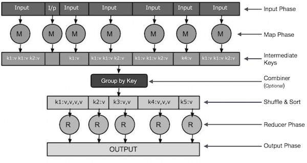

Figure 3.1: Linus Torvald
Dr. M. Kamakshaiah is a open source software evangelist, full stack developer and academic of data science and anaytics. His teaching interests are IT practices in business, MIS, Data Science, Business Analytics including functional analytics related to marketing, finance, and HRM, quality and operations. He also teaches theoretical concepts like statistical diagnosis, multivariate analytics, numerical simulations & optimization, machine learning AI, IoT using few programming languages like R, Python, Java and more.
His research interests are related to few domains such as healthcare, education, food & agriculture, open source software and etc. He has taught abroad for two years and credits two country visits. He has developed few free and open source software solutions meant for corporate practitioners, academics, scholars and students engaging in data science and analytics. All his software applications are available from his GITHUB portal https://github.com/Kamakshaiah.
I had never learned programming, seriously, through out my formal education. I never went to college in search of such knowledge. I did masters in business management. I started teaching soon after my post graduation. I did not even know as how to use simple spreadsheet applications until I encountered its need while preparing internal marks for PG students in one of the colleges where I taught business management. I used to take help from my colleagues to do such tasks. One of the reasons is that in India teaching industry was not so equipped to provide such resources to faculty members. My first encounter with computer was when I was studying MBA. We used to have lab, a namesake lab, that hardly useful to learn about computers forget about programming. We had very brief instruction over certain outdated tools like d base, FORTRAN, COBOL, C and a couple of other tools which I don’t remember appropriately. And this was part of certain paper (subject) on computer application, which was not regarded as an important course for MBA students. My first program was a prime number detection in Turbo C. I just copied from the text book and executed. I don’t remember now as how I did that neither I know at that time as what I was writing. We had very poor teaching atmosphere with very less amount of resources and instruction. But I used to make a special point of reading books related to computer science whenever I visited library. That way I used to neglect other papers (courses).
I did not have opportunity to work on computers until after 10 years of my work experience. I bought my first laptop in 2007, a dual core Acer-Aspire 5920. That was touted to be one of the latest and best machines in that year for medium class users. I did not know much about usage, so I used to play games and use office productivity suites. This machine was much different from the days I started reading about computers. Dual Core was the latest and industry was talking about launching of Core 2 Duo by Intel at that time. Before that the processors were never known with cores but every body used to be crazy for Pentium. I hardly know anything about these aspects of computing other than names in news.
My concentration skipped to operating systems due to the fact that I was so bad user. I spoiled OS several times. One of the reasons is due to viruses and the other is abuse of applications. I came across Linux when I was working in North East Africa as instructor while teaching business management. Computers in the university were very badly infected by different types of viruses. I got to install Ubuntu so that I can keep much of this infection away from my laptop. And that changed my understanding on computers and programming. My second programming language at that time ws Python (the first was C which I learned by self regardless of the fact that it was part of the course). I only know about Java but hardly had any idea of using the same for my needs. I was so curious of learning about Python with out much involving in programming. At the same time I also came across R Language which was regarded as one of the most widely used programming language for statistical computing and quantitative analysis. I started using R Language in full swing when I was working in Symbiosis, Pune, India. In the year 2013 I introduced all these tools, as a matter of minor specialization and while teaching business analytic, in one of the colleges in Hyderabad, India.
Coming to the present book, i.e. Hadoop Kichidi, I only call it Kichidi because it lacks formal structure and doesn’t involve hard-core programming. The work Kichidi is used for a special cookery in southern part of India. Kichidi is cooked mixing certain ingredients that are heterogeneous and consumed separately otherwise. I thought of putting this word for this manual or book, whatever you may call, due to the fact that it is a mixture of certain required aspects of open source tools like Linux, Java (Open JDK, Open JRE), Hadoop. Albeit of the facts, the goal of this resource is to gain understanding on big data analytics through Hadoop. To be frank, I started learning Java only after I installed Hadoop. Promise to say I did know the fact that I might require Java to do Hadoop. I learned basics of Java hurriedly and exactly in two days for I was preparing to give training on Hadoop. This sounds as ridiculous but it is true. The code I provided in this resource is in fact scratched from certain online resources but available as open content.
This book is only useful to gain knowledge on Hadoop administration but not programming. I wish that I might be able to write another book in which I could explain Hadoop programming. In fact, it is not extraneous if I say that I could learn and teach Hadoop that is because of passion for open source software and specifically for Linux. Linux is a great operating system. I use Ubuntu mostly for my needs. I often write SHELL scripts and also enthral at the way it works. This book has few chapters. The first deals with installation and configuration of Hadoop in Linux systems. The second deals with Hadoop Distributed File System (HDFS). The third deals with Yarn and its usefulness in managing resouces. The fourth deals with basic programming in Java and final chapter deals with MapReduce. MapReduce is a special langauge for data processing. HDFS, Yarn and MapReduce are part of Hadoop core or project. To learn MapReduce one need to know Core Java. I narrated all this story only to let the readers to know that learning requires passion but not formal education. I believe that to do research one needs brain but not PhD. In India, especially in academics there is misconception that to teach one needs PhD. This is totally an unreasonable idea which an academic must not have, at least in my opinion and pardon me if I am wrong. In India there is lot of knowledge and wisdom in villages, where people try to cure and heal deadly diseases and solve their problem rather more creatively than urban people. Unfortunately, most of the people do believe that civilization happened due to urbanization. Very few worry about uncivilized life in very civil places. After all, as I read somewhere, in 21st century the devil walk in the streets not as a beast but as a beauty. At last I wish you all the best and happy reading.
Author
Kamakshaiah Musunuru
Apache Hadoop is a collection of open source software utilities that facilitate using a network of many computers to solve problems involving massive amounts of data and computation. It provides a software framework for distributed storage and processing of big data using the MapReduce programming model. Hadoop was originally designed for computer clusters built from commodity hardware, which is still the common use. It has since also found use on clusters of higher-end hardware. All the modules in Hadoop are designed with a fundamental assumption that hardware failures are common occurrences and should be automatically handled by the framework.
The core of Apache Hadoop consists of a storage part, known as Hadoop Distributed File System (HDFS), and a processing part which is a MapReduce programming model. Hadoop splits files into large blocks and distributes them across nodes in a cluster. It then transfers packaged code into nodes to process the data in parallel. This approach takes advantage of data locality, where nodes manipulate the data they have access to. This allows the dataset to be processed faster and more efficiently than it would be in a more conventional supercomputer architecture that relies on a parallel file system where computation and data are distributed via high-speed networking.
The base Apache Hadoop framework is composed of the following modules:
The term Hadoop is often used for both base modules and sub-modules and also the ecosystem, or collection of additional software packages that can be installed on top of or alongside Hadoop, such as Apache Pig, Apache Hive, Apache HBase, Apache Phoenix, Apache Spark, Apache ZooKeeper, Cloudera Impala, Apache Flume, Apache Sqoop, Apache Oozie, and Apache Storm. Apache Hadoop’s MapReduce and HDFS components were inspired by Google papers on MapReduce and Google File System.
The Hadoop framework itself is mostly written in the Java programming language, with some native code in C and command line utilities written as shell scripts. Though MapReduce Java code is common, any programming language can be used with Hadoop Streaming to implement the map and reduce parts of the user’s program.Other projects in the Hadoop ecosystem expose richer user interfaces.
Big data is a term used to refer to the study and applications of data sets that are too complex for traditional data-processing application software to adequately deal with. Big data challenges include capturing data, data storage, data analysis, search, sharing, transfer, visualization, querying, updating, information privacy and data source. Big data was originally associated with three key concepts: volume, variety, and velocity. Other concepts later attributed with big data are veracity (i.e., how much noise is in the data) and value. 1
Modern usage of the term “big data” tends to refer to the use of predictive analytics, user behavior analytics, or certain other advanced data analytics methods that extract value from data, and seldom to a particular size of data set. “There is little doubt that the quantities of data now available are indeed large, but that’s not the most relevant characteristic of this new data ecosystem.” Analysis of data sets can find new correlations to “spot business trends, prevent diseases, combat crime and so on.” Scientists, business executives, practitioners of medicine, advertising and governments alike regularly meet difficulties with large data-sets in areas including Internet search, fin-tech, urban informatics, and business informatics. Scientists encounter limitations in e-Science work, including meteorology, genomics, connectomics, complex physics simulations, biology and environmental research.
Data sets grow rapidly in part because they are increasingly gathered by cheap and numerous information sensing Internet of Things (IoT) devices such as mobile devices, aerial (remote sensing), software logs, cameras, microphones, radio-frequency identification (RFID) readers and wireless sensor networks. The world’s technological per-capita capacity to store information has roughly doubled every 40 months since the 1980s; as of 2012, every day 2.5 exabytes (2.5×10e18) of data are generated. Based on an IDC report prediction, the global data volume will grow exponentially from 4.4 zettabytes to 44 zettabytes between 2013 and 2020. By 2025, IDC predicts there will be 163 zettabytes of data. One question for large enterprises is determining who should own big-data initiatives that affect the entire organization. See table 1.1 for more details on data measures in bytes.
| Value | Symbol | SI |
| 1000 | k | kilo |
| 10002 | M | mega |
| 10003 | G | giga |
| 10004 | T | tera |
| 10005 | P | peta |
| 10006 | E | exa |
| 10007 | Z | zetta |
| 10008 | Y | yotta |
Relational database management systems, desktop statistics and software packages used to visualize data often have difficulty handling big data. The work may require “massively parallel software running on tens, hundreds, or even thousands of servers”. What qualifies as being “big data” varies depending on the capabilities of the users and their tools, and expanding capabilities make big data a moving target. “For some organizations, facing hundreds of gigabytes of data for the first time may trigger a need to reconsider data management options. For others, it may take tens or hundreds of terabytes before data size becomes a significant consideration.”
The term has been in use since the 1990s, with some giving credit to John Mashey for popularizing the term. Perhaps, in simple terms; we might be able to define Big data as
“Anything that includes data sets with sizes beyond the ability of commonly used software tools to capture, curate, manage, and process data within a tolerable elapsed time”.
Big data philosophy encompasses unstructured, semi-structured and structured data, however the main focus is on unstructured data. Big data “size” is a constantly moving target, as of 2012 ranging from a few dozen terabytes to many exabytes of data. Big data requires a set of techniques and technologies with new forms of integration to reveal insights from data sets that are diverse, complex, and of a massive scale.
In 2016 De Mauro and et al defines that 2
“It represents the information assets characterized by such a high volume, velocity and variety to require specific technology and analytical methods for its transformation into value”.
Additionally, a new V, veracity, is added by some organizations to describe it, revisionism challenged by some industry authorities. The three Vs (volume, variety and velocity) have been further expanded to other complementary characteristics of big data:
A 2018 definition states
“Big data is where parallel computing tools are needed to handle data”, and notes, “This represents a distinct and clearly defined change in the computer science used, via parallel programming theories, and losses of some of the guarantees and capabilities made by Codd’s relational model”. 3
Hilbert, Martin and others mentions below mentioned characteristics: 4
Pandora, Spotify, Apple Music, Tidal... These are a few of the biggest names in streaming music. Livestreaming has forever changed how we listen to music, and the disruption these platforms are spreading through the music industry is only just starting. The next area that’s ripe for sweeping change is the use of big data and music personalization for live-stream listeners.
How are streaming services using data to understand what their customers want to hear? How are they using a wide array of data sources to make better listener recommendations? What insights do their personalization efforts provide other consumer-focused businesses?
Live-streaming music is the platform consumers demand, and it’s rapidly displacing physical sales (CDs) and downloads (via services such as iTunes). The Nielsen Music U.S. Mid-Year Report noted only halfway through 2017 that on-demand audio streams reached over 184 billion streams, a 62.4-percent increase over the same time period in 2016. David Bakula, the senior vice president of music industry insights for Nielsen, noted, “The rapid adoption of streaming platforms by consumers has generated engagement with music on a scale that we’ve never seen before.”
The key phrase to note is “engagement with music.” Subscription-based streaming has made discovery of new music easier. For lesser-known artists, it’s easier to find an audience and less costly to produce and distribute music. For consumers, it allows them to listen to as much music as they like for as long as they want. Their options aren’t limited to a download. They can listen to anything, anywhere.
Distributors have stopped selling ownership, and instead sell access. The barriers to engagement have dropped between musicians and listeners. How are streaming services using big data to improve customer engagement with their services?
There are different approaches to combining big data and music personalization. For streaming leader Spotify, it was necessary to grow the personalization team. Within a few short years, the company went from having one tiny team to multiple teams located in New York, Boston, and Stockholm.
Spotify notes that platform features are “but the tip of a huge personalization iceberg.” Discover Weekly is one personalization feature that delivers a two-hour compilation of custom-made music to Spotify users, which is “based both on your own listening as well as what others are playlisting and listening to around the songs you love … It’s like having your best friend make you a personalized mix tape every single week.”
Release Radar is a feature that Spotify added in 2016. It provides users with a weekly playlist with songs from new albums. The company admits that for new albums, there isn’t data about streaming or playlists to draw from. Instead, it relies on “audio research” that uses deep learning to curate similarities between music. By comparing this research to a user’s listening history, new tracks that might pique a listener’s interest can be determined. Pandora’s Big Data Music Project
Spotify’s audio research approach is similar to Pandora’s Music Genome Project, which began in 1999. In this project, teams of trained musicians listen to and categorize music. From that work, Pandora has built a collection of 450 musical attributes that describe a song’s melody, harmony, rhythm, form, instrumentation, lyrics, and voice.
That work informs the platform’s machine learning and algorithms. Pandora combines the data compiled in the project with data about what users listened to, as well as the listener’s thumbs-up or thumbs-down choices when they are presented with a new song. With the Music Genome Project, Pandora hopes to deliver the “most comprehensive music analysis ever undertaken” and provide listeners with “personalized radio that plays what you love and continually evolves with your tastes.”
The sheer volume of music and other audio being streamed by listeners reveals that streaming services have tapped into a strong consumer need. This popularity is not something they’re taking for granted. The lessons being applied to big data and music offer insight that other consumer-focused retailers should heed.
Live-streaming platforms continue to explore more ways for big data to drive customer engagement and loyalty. The growth and customer satisfaction being driven by these efforts should be music to the ears of retailers of all kinds.
If you work in manufacturing, you know how quickly competitors can gain an advantage: a plant improvement here, a supply chain tweak there—it all adds up. Additionally, the challenges facing manufacturers are driving them to transform the way they manufacture, distribute, sell, and support their offerings across the entire product life cycle. Using big data in manufacturing can give you the upper hand by making you more competitive.
Competition in the manufacturing industry is becoming highly unpredictable as innovation comes from an increasingly wide array of regions and markets. This can leave companies struggling to keep up, making efficiency in supply chains and manufacturing plants more important than ever. Exacerbating this competition is the accelerating innovation cycle. Improved technical capabilities enable competitors to design, engineer, manufacture and distribute products more quickly than ever before, reducing their time to market.
So, can using big data in manufacturing help businesses meet these competitive challenges? Absolutely. Companies with a more holistic view of their enterprise can spot potential issues and optimize their processes to retain a competitive edge.
For example, big data can also drive efficiency in product manufacturing processes through machine learning. This branch of artificial intelligence, which analyzes historical data to understand “normal” process performance, enables companies to monitor plant processes to detect anomalies, and optimize product quality and production yield. This, along with the ability to leverage machine learning-enabled predictive maintenance models, can dramatically minimize plant equipment downtime, driving down overall manufacturing costs even further.
Another problem manufacturers face is that their competitors are taking advantage of more complex, rapidly evolving supply chains. Digital supply chains respond faster to changes in demand due to a real-time flow of information, complete visibility, and the ability to respond quickly.
As manufacturers come under pressure to navigate these supply chains for better pricing and delivery terms, they must also ensure that they meet regulatory compliance challenges around environmental and corporate quality controls. Sourcing non-optimal components that don’t meet environmental standards could create compliance problems further down the line.
To prevent these problems while making the best use of the supply chain, manufacturers need a holistic understanding of conditions throughout the delivery pipeline. They must extend their visibility from the factory to the supply chain, drawing data from a range of stakeholders, including suppliers and logistics firms. This can create a complete view of the supply chain that will help manufacturers predict and adapt for emerging issues.
The more data sources that you can consume, the more you can understand and refine your manufacturing process. Pulling in supply chain data from logistics partners and suppliers can help you further refine your products by looking for patterns that affect quality and production times. Seeing patterns in supply chain behavior can help you avoid disruptions in materials supply, further enhancing your manufacturing efficiency.
At the other end of the supply chain lies the consumer. There, too, companies face new challenges. Consumers are increasingly empowered, enjoying an unprecedented range of product and service options. Manufacturers that don’t anticipate their customers’ needs risk losing them. It’s all about growth in this hyper-competitive marketplace and growth demands excellence in customer experience with customer-centric interactions, and innovative products and services throughout the product life cycle.
The smartest vendors turn these customer challenges into opportunities. They use big data to gather and analyze customer requirements and feed those insights back into the product design cycle in a process of continuous improvement. They can use a variety of sources for this, including customer relationship management and marketing systems, sales databases, and technical support feeds.
Companies that master big data can meet these industry challenges and set themselves up for longer-term success. Instead of aiming only at short-term goals, such as increasing production volume and lowering costs, they can use data from this unified supply chain and manufacturing ecosystem to gain insights into new market opportunities.
Rather than blindly turning the crank to hit the next quarter’s sales target, smart companies can use this data to identify new geographical and product markets, and plan targeted business expansions, paving the way for structured, healthy growth.
This ultimate use of big data will come after manufacturers use data sources to create a more cohesive view of their product life cycles. Along the way, they can improve their competitive advantage by realizing tangible improvements in productivity and quality.
The data is already latent in the manufacturing plant and in your logistical supply chains. By using big data in manufacturing to power your decision-making, you can unlock its value.
Global spending on big data and business analytics will grow to more than $187 billion in the next few years. At the same time, fears over the use of big data continue to grow—according to research from the University of Cambridge, 71 percent of consumers believe brands that access their personal data use it unethically.
But that’s not always true. Smart organizations, in both the private and public sectors, are instead utilizing big data for social good. From addressing complex social issues to fighting hunger, big data is making it easier to create lasting, positive change in society.
Various academics have voiced their concerns. Cathy O’Neil, former director of The Lede Program at Columbia University, says algorithms and mathematical models should be used to help reduce bias and inequality. However, the reverse is often true—big data models can sometimes help reinforce discrimination, and automated data–led decisions can leave unfortunate individuals further exposed to poverty.
Yet while the potential exists for big data to create inequality, there’s also the opportunity to improve society. Using big data for social good, therefore, should be the aim for all organizations that utilize big data—and examples of that positive use of information already exist.
Some experts believe public and private partnerships are the best way to help use big data for social good. Large, blue-chip organizations have the skills and technologies that are developing game-changing big data models. Lending this capability to nonprofit organizations could help change the world for the better.
There are examples of this link-up taking place around the globe. The nonprofit DataKind brings together leading data scientists with high-impact social organizations: take its recent partnership with Pollinate Energy to address the detection of urban poor communities in Bangalore via satellite images and other data points.
Academic institutions are forging partnerships, too. The University of Chicago runs a summer program called The Data Science for Social Good Fellowship, which helps train aspiring data scientists to work on projects with a positive impact. Working closely with governments and nonprofits, research fellows in the program take on real-world problems in key areas, including education, health, and public safety.
Mobile operator representation organization GSMA recently launched an initiative to use vendors’ big data capabilities to address humanitarian crises. The program, known as Big Data for Social Good, aims to meet significant crises—such as epidemics and natural disasters—head on, and is being launched alongside 19 of the world’s leading mobile operators.
Key executives in these organizations are helping to drive change. Nuria Oliver, director of data science research at Vodafone, has spent the past decade exploring how big data can be used to improve society. She says multidisciplinary approaches work best: bringing together data scientists and epidemiologists creates a confluence of talent to help solve social problems.
Another example from the mobile space comes in the form of LUCA, the big data unit within Telefonica. The organization—which is running a Big Data for Social Good initiative—is using an Apache Hadoop–based data platform to collect and store information in a data repository to undertake data transformation and analysis.
What all parties recognize is that big data is about more than simply improving customer experiences and business profits. There is growing recognition of the game-changing power of big data from key organizations, such as the United Nations, the World Economic Forum, and the World Bank. In short, the right insight at the right time can improve society.
Take the United Network for Organ Sharing (UNOS), which is the private, nonprofit organization that runs the U.S. organ transplant system. UNOS manages the requirements of a network of hundreds of hospitals, transplant centers, organ procurement professionals, and thousands of volunteers. The decisions UNOS makes change peoples’ lives.
UNOS uses a connected data platform solution and 100 percent open-source tools to create a self-service reporting system for centers and organ procurement organizations. The organization’s data warehouse gives doctors a past and present view across patients and transplanted organs. The result is informed decisions that have the patients’ best interests in mind.
The amount of data being collected—and the money spent on technologies to analyze this information—continues to rise. While experts are concerned by potential risks to individuals, some organizations are already using their investment to help sponsor an improvement in societal conditions. At a time of huge change, we all have a responsibility to find ways to use big data for social good.
Anyone who’s bought a house without paying the full price upfront knows that applying for a mortgage is anything but simple and straightforward. Even the customers with the most solid financial footings go through lengthy and inconvenient processes to borrow for a home. However, financial institutions and other money services businesses are starting to investigate using big data analytics to cut down on the red tape in mortgage applications and make it easier for their customers to apply for loans.
Mortgage banking has long been about modeling loan performance appropriately, based on a financial institution’s business goals, appetite for and ability to take risks, and the overall economy. Risk departments have used models to drive decisions about how many loans should be issued, what types of pricing and mitigation should be applied to individual loans, and what demographics and segments of the economy represent good loans for a bank or credit union.
The key difference with the emergence of big data analytics is the amount of data at companies’ disposal. Models with more data have gotten much better at assessing risk and providing an accurate idea of the behavior of a portfolio of mortgages. These models succeed because they use a much broader base of data types—including factors such as a prospective customer’s geolocation and transaction history—and are able to correlate things like comparable people who behave in a particular manner.
Data is also more available. The amount of data an organization can collect on one person is vaster than what used to be possible and, once assembled, the data can build a dramatically different picture. Data sets consisting of anything from geolocation to credit card transactions and store sales are starting to be available for sale to lending institutions and other outfits, and that data can be correlated with existing models to generate better decisions.
The types of mathematical models being used today have gotten better in recent years because more data input equals better tweaking and adjusting, and exponentially better training over much larger amounts of data. Simply put, there are more types of input, and that leads to better decision-making.
The speed of mortgage decisions is also improving, thanks to several factors. Today’s big data–oriented infrastructure is more robust and generally runs in near-real time. Most big data implementations have infrastructure that allows a lot of data—of different types or different functions—to be stored very effectively and very cheaply. Additionally, this infrastructure allows easy access to historical data in order to tweak models and validate them, providing analysts the ability to run models effectively and very quickly.
Key to these new capabilities is a computational engine that allows models to run in parallel and very fast, along with a streaming capability to be able to run a model on the fly as new data is coming in.
Ultimately, the idea behind drawing conclusions from big data is to build models and automation that drive better business decisions. But there are pitfalls to watch out for.
From a lending standpoint, as these models get better, the decision on whether someone should be approved can be driven more by the computer and less by a human decision. The removal of the human element in decision-making has advantages and disadvantages.
If a model is making a choice, it’s typically only programmed to examine risk factors, therefore leaving it blind to other factors a human might consider. On the other hand, a human’s decision can be influenced by biases extraneous to a purely risk-based decision. Removing biases can be an excellent attribute, but you also remove the ability to make judgment calls, which can mean making a borderline good loan go bad or vice verse.
Thus, a good model will always have two quality assurance steps: additional safety checks to ensure you don’t come up with the wrong answer because of a faulty model, and a review of decisions so that a human can assess the overall picture and either sustain or override the decision.
Another risk of utilizing data analytics as part of your mortgage and lending efforts is volume. With better models and decision-making, an organization can acquire an unwieldy appetite for loans. When you increase volume, however, risk can expand quickly, and the negative consequences can occur much more quickly over a larger base of people.
Finally, there’s a risk in how intelligent and tolerant models can be in driving lending decisions. In particular, fraud prevention needs to be factored in early on. Models need to be smart enough to prevent gaming. If nefarious actors know a model works with, say, three factors, they may then attempt to force those factors to drive a desired result. Modelers and analysts must understand this important issue and ensure that their models are smart enough to combat it.
Ultimately, the use of big data analytics for mortgages drives better institutional profitability—more loans that are closed in less time, and that perform better overall and have a reduced risk of loss. As long as you’re mindful of the common trouble areas, you can capitalize on data’s value and see the results you’re looking for.
1Laney, Doug (2001). “3D data management: Controlling data volume, velocity and variety”. META Group Research Note. 6 (70).
2Read more about this definition at https://www.emeraldinsight.com/doi/full/10.1108/LR-06-2015-0061
3Fox, Charles (2018-03-25). Data Science for Transport. Springer.
4Hilbert, Martin. “Big Data for Development: A Review of Promises and Challenges. Development Policy Review”. martinhilbert.net. Retrieved 7 October 2015.
Apache Hadoop is a collection of open source software utilities that facilitate using a network of many computers to solve problems involving massive amounts of data and computation. It provides a software framework for distributed storage and processing of big data using the MapReduce programming model. Hadoop was originally designed for computer clusters built from commodity hardware, which is still the common use. It has since also found use on clusters of higher-end hardware. All the modules in Hadoop are designed with a fundamental assumption that hardware failures are common occurrences and should be automatically handled by the framework.
The core of Apache Hadoop consists of a storage part, known as Hadoop Distributed File System (HDFS), and a processing part which is a MapReduce programming model. Hadoop splits files into large blocks and distributes them across nodes in a cluster. It then transfers packaged code into nodes to process the data in parallel. This approach takes advantage of data locality, where nodes manipulate the data they have access to. This allows the data set to be processed faster and more efficiently than it would be in a more conventional supercomputer architecture that relies on a parallel file system where computation and data are distributed via high-speed networking.
The base Apache Hadoop framework is composed of the following modules:
The term Hadoop is often used for both base modules and sub-modules and also the ecosystem, or collection of additional software packages that can be installed on top of or alongside Hadoop, such as Apache Pig, Apache Hive, Apache HBase, Apache Phoenix, Apache Spark, Apache ZooKeeper, Cloudera Impala, Apache Flume, Apache Sqoop, Apache Oozie, and Apache Storm. Apache Hadoop’s MapReduce and HDFS components were inspired by Google papers on MapReduce and Google File System.
The Hadoop framework itself is mostly written in the Java programming language, with some native code in C and command line utilities written as shell scripts. Though MapReduce Java code is common, any programming language can be used with Hadoop Streaming to implement the map and reduce parts of the user’s program.Other projects in the Hadoop ecosystem expose richer user interfaces.
According to its co-founders, Doug Cutting and Mike Cafarella, the genesis of Hadoop was the Google File System paper that was published in October 2003. This paper spawned another one from Google – “MapReduce: Simplified Data Processing on Large Clusters”. Development started on the Apache Nutch project, but was moved to the new Hadoop sub-project in January 2006. Doug Cutting, who was working at Yahoo! at the time, named it after his son’s toy elephant.[20] The initial code that was factored out of Nutch consisted of about 5,000 lines of code for HDFS and about 6,000 lines of code for MapReduce.
In March 2006, Owen O’Malley was the first committer to add to the Hadoop project; Hadoop 0.1.0 was released in April 2006. It continues to evolve through contributions that are being made to the project.
Hadoop consists of the Hadoop Common package, which provides file system and operating system level abstractions, a MapReduce engine (either MapReduce/MR1 or YARN/MR2) and the Hadoop Distributed File System (HDFS). The Hadoop Common package contains the Java Archive (JAR) files and scripts needed to start Hadoop.
For effective scheduling of work, every Hadoop-compatible file system should provide location awareness, which is the name of the rack, specifically the network switch where a worker node is. Hadoop applications can use this information to execute code on the node where the data is, and, failing that, on the same rack/switch to reduce backbone traffic. HDFS uses this method when replicating data for data redundancy across multiple racks. This approach reduces the impact of a rack power outage or switch failure; if any of these hardware failures occurs, the data will remain available.
A small Hadoop cluster includes a single master and multiple worker nodes. The master node consists of a Job Tracker, Task Tracker, NameNode, and DataNode. A slave or worker node acts as both a DataNode and TaskTracker, though it is possible to have data-only and compute-only worker nodes. These are normally used only in nonstandard applications. Hadoop requires Java Runtime Environment (JRE) 1.6 or higher. The standard startup and shutdown scripts require that Secure Shell (SSH) be set up between nodes in the cluster.
In a larger cluster, HDFS nodes are managed through a dedicated NameNode server to host the file system index, and a secondary NameNode that can generate snapshots of the namenode’s memory structures, thereby preventing file-system corruption and loss of data. Similarly, a standalone JobTracker server can manage job scheduling across nodes. When Hadoop MapReduce is used with an alternate file system, the NameNode, secondary NameNode, and DataNode architecture of HDFS are replaced by the file-system-specific equivalents.
The Hadoop distributed file system (HDFS) is a distributed, scalable, and portable file system written in Java for the Hadoop framework. Some consider it to instead be a data store due to its lack of POSIX compliance,[28] but it does provide shell commands and Java application programming interface (API) methods that are similar to other file systems. A Hadoop is divided into HDFS and MapReduce. HDFS is used for storing the data and MapReduce is used for processing data. HDFS has five services as follows:
Top three are Master Services/Daemons/Nodes and bottom two are Slave Services. Master Services can communicate with each other and in the same way Slave services can communicate with each other. Name Node is a master node and Data node is its corresponding Slave node and can talk with each other.
Hadoop cluster has nominally a single namenode plus a cluster of datanodes, although redundancy options are available for the namenode due to its complexity. Each datanode serves up blocks of data over the network using a block protocol specific to HDFS. The file system uses TCP/IP sockets for communication. Clients use remote procedure calls (RPC) to communicate with each other.
HDFS stores large files (typically in the range of gigabytes to terabytes[31]) across multiple machines. It achieves reliability by replicating the data across multiple hosts, and hence theoretically does not require redundant array of independent disks (RAID) storage on hosts (but to increase input-output (I/O) performance some RAID configurations are still useful). With the default replication value, 3, data is stored on three nodes: two on the same rack, and one on a different rack. Data nodes can talk to each other to re-balance data, to move copies around, and to keep the replication of data high. HDFS is not fully POSIX-compliant, because the requirements for a POSIX file-system differ from the target goals of a Hadoop application. The trade-off of not having a fully POSIX-compliant file-system is increased performance for data throughput and support for non-POSIX operations such as Append.
In May 2012, high-availability capabilities were added to HDFS, letting the main meta-data server called the NameNode manually fail-over onto a backup. The project has also started developing automatic fail-overs.
The HDFS file system includes a so-called secondary namenode, a misleading term that some might incorrectly interpret as a backup namenode when the primary namenode goes offline. In fact, the secondary namenode regularly connects with the primary namenode and builds snapshots of the primary namenode’s directory information, which the system then saves to local or remote directories. These checkpointed images can be used to restart a failed primary namenode without having to replay the entire journal of file-system actions, then to edit the log to create an up-to-date directory structure. Because the namenode is the single point for storage and management of metadata, it can become a bottleneck for supporting a huge number of files, especially a large number of small files. HDFS Federation, a new addition, aims to tackle this problem to a certain extent by allowing multiple namespaces served by separate namenodes. Moreover, there are some issues in HDFS such as small file issues, scalability problems, Single Point of Failure (SPoF), and bottlenecks in huge metadata requests. One advantage of using HDFS is data awareness between the job tracker and task tracker. The job tracker schedules map or reduce jobs to task trackers with an awareness of the data location. For example: if node A contains data (a, b, c) and node X contains data (x, y, z), the job tracker schedules node A to perform map or reduce tasks on (a, b, c) and node X would be scheduled to perform map or reduce tasks on (x, y, z). This reduces the amount of traffic that goes over the network and prevents unnecessary data transfer. When Hadoop is used with other file systems, this advantage is not always available. This can have a significant impact on job-completion times as demonstrated with data-intensive jobs.
HDFS was designed for mostly immutable files and may not be suitable for systems requiring concurrent write operations.
HDFS can be mounted directly with a File system in User-space (FUSE) virtual file system on Linux and some other Unix systems.
File access can be achieved through the native Java API, the Thrift API (generates a client in a number of languages e.g. C++, Java, Python, PHP, Ruby, Erlang, Perl, Haskell, C#, Cocoa, Smalltalk, and OCaml), the command-line interface, the HDFS-UI web application over HTTP, or via 3rd-party network client libraries.
HDFS is designed for portability across various hardware platforms and for compatibility with a variety of underlying operating systems. The HDFS design introduces portability limitations that result in some performance bottlenecks, since the Java implementation cannot use features that are exclusive to the platform on which HDFS is running. Due to its widespread integration into enterprise-level infrastructure, monitoring HDFS performance at scale has become an increasingly important issue. Monitoring end-to-end performance requires tracking metrics from datanodes, namenodes, and the underlying operating system. There are currently several monitoring platforms to track HDFS performance, including Hortonworks, Cloudera, and Datadog.
Atop the file systems comes the MapReduce Engine, which consists of one JobTracker, to which client applications submit MapReduce jobs. The JobTracker pushes work to available TaskTracker nodes in the cluster, striving to keep the work as close to the data as possible. With a rack-aware file system, the JobTracker knows which node contains the data, and which other machines are nearby. If the work cannot be hosted on the actual node where the data resides, priority is given to nodes in the same rack. This reduces network traffic on the main backbone network. If a TaskTracker fails or times out, that part of the job is rescheduled. The TaskTracker on each node spawns a separate Java virtual machine (JVM) process to prevent the TaskTracker itself from failing if the running job crashes its JVM. A heartbeat is sent from the TaskTracker to the JobTracker every few minutes to check its status. The Job Tracker and TaskTracker status and information is exposed by Jetty and can be viewed from a web browser.
Known limitations of this approach are:
By default Hadoop uses FIFO scheduling, and optionally 5 scheduling priorities to schedule jobs from a work queue. In version 0.19 the job scheduler was refactored out of the JobTracker, while adding the ability to use an alternate scheduler (such as the Fair scheduler or the Capacity scheduler, described next).
The fair scheduler was developed by Facebook. The goal of the fair scheduler is to provide fast response times for small jobs and Quality of service (QoS) for production jobs. The fair scheduler has three basic concepts.
By default, jobs that are uncategorized go into a default pool. Pools have to specify the minimum number of map slots, reduce slots, as well as a limit on the number of running jobs. Capacity scheduler
The capacity scheduler was developed by Yahoo. The capacity scheduler supports several features that are similar to those of the fair scheduler.
There is no preemption once a job is running.
The biggest difference between Hadoop 1 and Hadoop 2 is the addition of YARN (Yet Another Resource Negotiator), which replaced the MapReduce engine in the first version of Hadoop. YARN strives to allocate resources to various applications effectively. It runs two demons, which take care of two different tasks: the resource manager, which does job tracking and resource allocation to applications, the application master, which monitors progress of the execution.
There are important features provided by Hadoop 3. For example, while there is one single namenode in Hadoop 2, Hadoop 3 enables having multiple name nodes, which solves the single point of failure problem.
In Hadoop 3, there are containers working in principle of Docker, which reduces time spent on application development. One of the biggest changes is that Hadoop 3 decreases storage overhead with erasure coding.
Also, Hadoop 3 permits usage of GPU hardware within the cluster, which is a very substantial benefit to execute deep learning algorithms on a Hadoop cluster.
(This material is copied from http://hadoop.apache.org/)
The Apache Hadoop software library is a framework that allows for the distributed processing of large data sets across clusters of computers using simple programming models. It is designed to scale up from single servers to thousands of machines, each offering local computation and storage. Rather than rely on hardware to deliver high-availability, the library itself is designed to detect and handle failures at the application layer, so delivering a highly-available service on top of a cluster of computers, each of which may be prone to failures.
The project includes these modules:
Other Hadoop-related projects at Apache include:
1Laney, Doug (2001). “3D data management: Controlling data volume, velocity and variety”. META Group Research Note. 6 (70).
2Read more about this definition at https://www.emeraldinsight.com/doi/full/10.1108/LR-06-2015-0061
3Fox, Charles (2018-03-25). Data Science for Transport. Springer.
4Hilbert, Martin. “Big Data for Development: A Review of Promises and Challenges. Development Policy Review”. martinhilbert.net. Retrieved 7 October 2015.
Free and open-source software (FOSS) is software that can be classified as both free software and open-source software. That is, anyone is freely licensed to use, copy, study, and change the software in any way, and the source code is openly shared so that people are encouraged to voluntarily improve the design of the software. This is in contrast to proprietary software, where the software is under restrictive copyright licensing and the source code is usually hidden from the users.
FOSS maintains the software user’s civil liberty rights (see the Four Essential Freedoms, below). Other benefits of using FOSS can include decreased software costs, increased security and stability (especially in regard to malware), protecting privacy, education, and giving users more control over their own hardware. Free and open-source operating systems such as Linux and descendants of BSD are widely utilized today, powering millions of servers, desktops, smart-phones (e.g., Android), and other devices. Free-software licenses and open-source licenses are used by many software packages. The free-software movement and the open-source software movement are online social movements behind widespread production and adoption of FOSS.
”Free and open-source software” (FOSS) is an umbrella term for software that is simultaneously considered both Free software and open-source software. FOSS (free and open-source software) allows the user to inspect the source code and provides a high level of control of the software’s functions compared to proprietary software. The term ”free software” does not refer to the monetary cost of the software at all, but rather whether the license maintains the software user’s civil liberties (”free” as in “free speech,” not as in “free beer”). There are a number of related terms and abbreviations for free and open-source software (FOSS or F/OSS), or free/libre and open-source software (FLOSS or F/LOSS—FLOSS is the FSF-preferred term).
Although there is almost a complete overlap between free-software licenses and open-source-software licenses, there is a strong philosophical disagreement between the advocates of these two positions. The terminology of FOSS or ”Free and Open-source software” was created to be a neutral on these philosophical disagreements between the FSF and OSI and have a single unified term that could refer to both concepts.
Richard Stallman’s Free Software Definition, adopted by the Free Software Foundation (FSF), defines free software as a matter of liberty not price, and it upholds the Four Essential Freedoms. The earliest-known publication of the definition of his free-software idea was in the February 1986 edition of the FSF’s now-discontinued GNU’s Bulletin publication. The canonical source for the document is in the philosophy section of the GNU Project website. As of August 2017, it is published in 40 languages.
To meet the definition of ”free software”, the FSF requires the software’s licensing respect the civil liberties/human rights of what the FSF calls the software user’s ”Four Essential Freedoms”.
The open-source-software definition is used by the Open Source Initiative (OSI) to determine whether a software license qualifies for the organization’s insignia for Open-source software. The definition was based on the Debian Free Software Guidelines, written and adapted primarily by Bruce Perens. Perens did not base his writing on the Four Essential Freedoms of free software from the Free Software Foundation, which were only later available on the web. Perens subsequently stated that he felt Eric Raymond’s promotion of Open-source unfairly overshadowed the Free Software Foundation’s efforts and reaffirmed his support for Free software. In the following 2000s, he spoke about open source again.
Users of FOSS benefit from the Four Essential Freedoms to make unrestricted use of, and to study, copy, modify, and redistribute such software with or without modification. If they would like to change the functionality of software they can bring about changes to the code and, if they wish, distribute such modified versions of the software or often depending on the software’s decision making model and its other users - even push or request such changes to be made via updates to the original software.
Manufacturers of proprietary, closed-source software are sometimes pressured to building in back-doors or other covert, undesired features into their software. Instead of having to trust software vendors, users of FOSS can inspect and verify the source code themselves and can put trust on a community of volunteers and users. As proprietary code is typically hidden from public view, only the vendors themselves and hackers may be aware of any vulnerabilities in them while FOSS involves as many people as possible for exposing bugs quickly.
FOSS is often free of charge although donations are often encouraged. This also allows users to better test and compare software.
FOSS allows for better collaboration among various parties and individuals with the goal of developing the most efficient software for its users or use-cases while proprietary software is typically meant to generate profits. Furthermore, in many cases more organizations and individuals contribute to such projects than to proprietary software. It has been shown that technical superiority is typically the primary reason why companies choose open source software.
According to Linus’s law the more people who can see and test a set of code, the more likely any flaws will be caught and fixed quickly. However, this does not guarantee a high level of participation. Having a grouping of full-time professionals behind a commercial product can in some cases be superior to FOSS.
Furthermore, publicized source code might make it easier for hackers to find vulnerabilities in it and write exploits. This however assumes that such malicious hackers are more effective than white hat hackers which responsibly disclose or help fix the vulnerabilities, that no code leaks or exfiltrations occur and that reverse engineering of proprietary code is a hindrance of significance for malicious hackers.
Sometimes, FOSS is not compatible with proprietary hardware or specific software. This is often due to manufacturers obstructing FOSS such as by not disclosing the interfaces or other specifications needed for members of the FOSS movement to write drivers for their hardware - for instance as they wish customers to run only their own proprietary software or as they might benefit from partnerships.
While FOSS can be superior to proprietary equivalents in terms of software features and stability, in many cases FOSS has more unfixed bugs and missing features when compared to similar commercial software. This varies per case and usually depends on the level of interest and participation in a FOSS project. Furthermore, unlike with typical commercial software, missing features and bugfixes can be implemented by any party that has the relevant motivation, time and skill to do so.
There is often less certainty in FOSS projects gaining the required resources / participation for continued development than commercial software backed by companies. However companies also often abolish projects for being unprofitable and often large companies rely on and hence co-develop open source software.
From the 1950s and on through the 1980s, it was common for computer users to have the source code for all programs they used, and the permission and ability to modify it for their own use. Software, including source code, was commonly shared by individuals who used computers, often as public domain software. Most companies had a business model based on hardware sales, and provided or bundled software with hardware, free of charge.
By the late 1960s, the prevailing business model around software was changing. A growing and evolving software industry was competing with the hardware manufacturer’s bundled software products; rather than funding software development from hardware revenue, these new companies were selling software directly. Leased machines required software support while providing no revenue for software, and some customers who were able to better meet their own needs did not want the costs of software bundled with hardware product costs. In United States vs. IBM, filed January 17, 1969, the government charged that bundled software was anti-competitive. While some software was still being provided without monetary cost and license restriction, there was a growing amount of software that was only at a monetary cost with restricted licensing. In the 1970s and early 1980s, some parts of the software industry began using technical measures (such as distributing only binary copies of computer programs) to prevent computer users from being able to use reverse engineering techniques to study and customize software they had paid for. In 1980, the copyright law was extended to computer programs in the United States[21]—previously, computer programs could be considered ideas, procedures, methods, systems, and processes, which are not copyrightable. Early on, closed-source software was uncommon until the mid-1970s to the 1980s, when IBM implemented in 1983 an ”object code only” policy, no longer distributing source code.
In 1983, Richard Stallman, longtime member of the hacker community at the MIT Artificial Intelligence Laboratory, announced the GNU project, saying that he had become frustrated with the effects of the change in culture of the computer industry and its users. Software development for the GNU operating system began in January 1984, and the Free Software Foundation (FSF) was founded in October 1985. An article outlining the project and its goals was published in March 1985 titled the GNU Manifesto. The manifesto included significant explanation of the GNU philosophy, Free Software Definition and ”copyleft” ideas. The FSF takes the position that the fundamental issue Free software addresses is an ethical one—to ensure software users can exercise what it calls ”The Four Essential Freedoms”.
The Linux kernel, created by Linus Torvalds, was released as freely modifiable source code in 1991. Initially, Linux was not released under either a Free software or an Open-source software license. However, with version 0.12 in February 1992, he re-licensed the project under the GNU General Public License.
FreeBSD and NetBSD (both derived from 386BSD) were released as Free software when the USL v. BSD lawsuit was settled out of court in 1993. OpenBSD forked from NetBSD in 1995. Also in 1995, The Apache HTTP Server, commonly referred to as Apache, was released under the Apache License 1.0.
In 1997, Eric Raymond published The Cathedral and the Bazaar, a reflective analysis of the hacker community and Free software principles. The paper received significant attention in early 1998, and was one factor in motivating Netscape Communications Corporation to release their popular Netscape Communicator Internet suite as Free software. This code is today better known as Mozilla Firefox and Thunderbird.
Netscape’s act prompted Raymond and others to look into how to bring the FSF’s Free software ideas and perceived benefits to the commercial software industry. They concluded that FSF’s social activism was not appealing to companies like Netscape, and looked for a way to rebrand the Free software movement to emphasize the business potential of sharing and collaborating on software source code. The new name they chose was ”Open-source”, and quickly Bruce Perens, publisher Tim O’Reilly, Linus Torvalds, and others signed on to the re-branding. The Open Source Initiative was founded in February 1998 to encourage the use of the new term and evangelize open-source principles.
While the Open Source Initiative sought to encourage the use of the new term and evangelize the principles it adhered to, commercial software vendors found themselves increasingly threatened by the concept of freely distributed software and universal access to an application’s source code. A Microsoft executive publicly stated in 2001 that ”Open-source is an intellectual property destroyer. I can’t imagine something that could be worse than this for the software business and the intellectual-property business.” This view perfectly summarizes the initial response to FOSS by some software corporations. For many years FOSS played a niche role outside of the mainstream of private software development. However the success of FOSS Operating Systems such as Linux, BSD and the companies based on FOSS such as Red Hat, has changed the software industry’s attitude and there has been a dramatic shift in the corporate philosophy concerning the development of Free and Open-source software (FOSS).
Linux is a family of open source Unix-like operating systems based on the Linux kernel, an operating system kernel first released on September 17, 1991, by Linus Torvalds. Linux is typically packaged in a Linux distribution.
Distributions include the Linux kernel and supporting system software and libraries, many of which are provided by the GNU Project. Many Linux distributions use the word ”Linux” in their name, but the Free Software Foundation uses the name GNU/Linux to emphasize the importance of GNU software, causing some controversy.
Popular Linux distributions include Debian, Fedora, and Ubuntu. Commercial distributions include Red Hat Enterprise Linux and SUSE Linux Enterprise Server. Desktop Linux distributions include a windowing system such as X11 or Wayland, and a desktop environment such as GNOME or KDE Plasma. Distributions intended for servers may omit graphics altogether, or include a solution stack such as LAMP. Because Linux is freely redistributable, anyone may create a distribution for any purpose.
Linux was originally developed for personal computers based on the Intel x86 architecture, but has since been ported to more platforms than any other operating system. Because of the dominance of Android on smart-phones, Linux also has the largest installed base of all general-purpose operating systems. Although it is used by only around 2.3 percent of desktop computers, the Chromebook, which runs the Linux kernel-based Chrome OS, dominates the US K–12 education market and represents nearly 20 percent of sub-$300 notebook sales in the US. Linux is the leading operating system on servers (over 96.4% of the top 1 million web servers’ operating systems are Linux), leads other big iron systems such as mainframe computers, and is the only OS used on TOP500 supercomputers (since November 2017, having gradually eliminated all competitors).
Linux also runs on embedded systems, i.e. devices whose operating system is typically built into the firmware and is highly tailored to the system. This includes routers, automation controls, smart home technology (like Google Nest), televisions (Samsung and LG Smart TVs use Tizen and WebOS, respectively),automobiles (for example, Tesla, Audi, Mercedes-Benz, Hyundai, and Toyota all rely on Linux), digital video recorders, video game consoles, and smartwatches. The Falcon 9’s and the Dragon 2’s avionics use a customized version of Linux.
Linux is one of the most prominent examples of free and open-source software collaboration. The source code may be used, modified and distributed commercially or non-commercially by anyone under the terms of its respective licenses, such as the GNU General Public License.
The Unix operating system was conceived and implemented in 1969, at AT&T’s Bell Laboratories in the United States by Ken Thompson, Dennis Ritchie, Douglas McIlroy, and Joe Ossanna. First released in 1971, Unix was written entirely in assembly language, as was common practice at the time. In 1973 in a key, pioneering approach, it was rewritten in the C programming language by Dennis Ritchie (with the exception of some hardware and I/O routines). The availability of a high-level language implementation of Unix made its porting to different computer platforms easier.
Due to an earlier antitrust case forbidding it from entering the computer business, AT&T was required to license the operating system’s source code to anyone who asked. As a result, Unix grew quickly and became widely adopted by academic institutions and businesses. In 1984, AT&T divested itself of Bell Labs; freed of the legal obligation requiring free licensing, Bell Labs began selling Unix as a proprietary product, where users were not legally allowed to modify Unix. The GNU Project, started in 1983 by Richard Stallman, had the goal of creating a ”complete Unix-compatible software system” composed entirely of free software. Work began in 1984.[39] Later, in 1985, Stallman started the Free Software Foundation and wrote the GNU General Public License (GNU GPL) in 1989. By the early 1990s, many of the programs required in an operating system (such as libraries, compilers, text editors, a Unix shell, and a windowing system) were completed, although low-level elements such as device drivers, daemons, and the kernel, called GNU/Hurd, were stalled and incomplete.
Linus Torvalds has stated that if the GNU kernel had been available at the time (1991), he would not have decided to write his own. Although not released until 1992, due to legal complications, development of 386BSD, from which NetBSD, OpenBSD and FreeBSD descended, predated that of Linux. Torvalds has also stated that if 386BSD had been available at the time, he probably would not have created Linux.
MINIX was created by Andrew S. Tanenbaum, a computer science professor, and released in 1987 as a minimal Unix-like operating system targeted at students and others who wanted to learn the operating system principles. Although the complete source code of MINIX was freely available, the licensing terms prevented it from being free software until the licensing changed in April 2000.
In 1991, while attending the University of Helsinki, Torvalds became curious about operating systems. Frustrated by the licensing of MINIX, which at the time limited it to educational use only, he began to work on his own operating system kernel, which eventually became the Linux kernel.
Torvalds began the development of the Linux kernel on MINIX and applications written for MINIX were also used on Linux. Later, Linux matured and further Linux kernel development took place on Linux systems. GNU applications also replaced all MINIX components, because it was advantageous to use the freely available code from the GNU Project with the fledgling operating system; code licensed under the GNU GPL can be reused in other computer programs as long as they also are released under the same or a compatible license. Torvalds initiated a switch from his original license, which prohibited commercial redistribution, to the GNU GPL. Developers worked to integrate GNU components with the Linux kernel, making a fully functional and free operating system.
Linus Torvalds had wanted to call his invention ”Freax”, a portmanteau of ”free”, ”freak”, and ”x” (as an allusion to Unix). During the start of his work on the system, some of the project’s makefiles included the name ”Freax” for about half a year. Torvalds had already considered the name ”Linux”, but initially dismissed it as too egotistical.
In order to facilitate development, the files were uploaded to the FTP server (ftp.funet.fi) of FUNET in September 1991. Ari Lemmke, Torvalds’ coworker at the Helsinki University of Technology (HUT), who was one of the volunteer administrators for the FTP server at the time, did not think that ”Freax” was a good name. So, he named the project ”Linux” on the server without consulting Torvalds. Later, however, Torvalds consented to ”Linux”.
According to a newsgroup post by Torvalds, the word ”Linux” should be pronounced LIN-uuks with a short ’i’ as in ’print’ and ’u’ as in ’put’. To further demonstrate how the word ”Linux” should be pronounced, he included an audio guide with the kernel source code. Contradictory, in this recording, he pronounces ’Linux’ LEEN-uuks with a short but close unrounded front vowel.

Adoption of Linux in production environments, rather than being used only by hobbyists, started to take off first in the mid-1990s in the supercomputing community, where organizations such as NASA started to replace their increasingly expensive machines with clusters of inexpensive commodity computers running Linux. Commercial use began when Dell and IBM, followed by Hewlett-Packard, started offering Linux support to escape Microsoft’s monopoly in the desktop operating system market.
Today, Linux systems are used throughout computing, from embedded systems to virtually all supercomputer sand have secured a place in server installations such as the popular LAMP application stack. Use of Linux distributions in home and enterprise desktops has been growing. Linux distributions have also become popular in the netbook market, with many devices shipping with customized Linux distributions installed, and Google releasing their own Chrome OS designed for netbooks.
Linux’s greatest success in the consumer market is perhaps the mobile device market, with Android being one of the most dominant operating systems on smart-phones and very popular on tablets and, more recently, on wearable. Linux gaming is also on the rise with Valve showing its support for Linux and rolling out SteamOS, its own gaming-oriented Linux distribution. Linux distributions have also gained popularity with various local and national governments, such as the federal government of Brazil.
A distribution is largely driven by its developer and user communities. Some vendors develop and fund their distributions on a volunteer basis, Debian being a well-known example. Others maintain a community version of their commercial distributions, as Red Hat does with Fedora, and SUSE does with openSUSE.
In many cities and regions, local associations known as Linux User Groups (LUGs) seek to promote their preferred distribution and by extension free software. They hold meetings and provide free demonstrations, training, technical support, and operating system installation to new users. Many Internet communities also provide support to Linux users and developers. Most distributions and free software/open-source projects have IRC chat rooms or newsgroups. Online forums are another means for support, with notable examples being LinuxQuestions.org and the various distribution specific support and community forums, such as ones for Ubuntu, Fedora, and Gentoo. Linux distributions host mailing lists; commonly there will be a specific topic such as usage or development for a given list.
There are several technology websites with a Linux focus. Print magazines on Linux often bundle cover disks that carry software or even complete Linux distributions. Although Linux distributions are generally available without charge, several large corporations sell, support, and contribute to the development of the components of the system and of free software. An analysis of the Linux kernel showed 75 percent of the code from December 2008 to January 2010 was developed by programmers working for corporations, leaving about 18 percent to volunteers and 7% unclassified. Major corporations that provide contributions include Dell, IBM, HP, Oracle, Sun Microsystems (now part of Oracle) and Nokia. A number of corporations, notably Red Hat, Canonical and SUSE, have built a significant business around Linux distributions.
The free software licenses, on which the various software packages of a distribution built on the Linux kernel are based, explicitly accommodate and encourage commercialization; the relationship between a Linux distribution as a whole and individual vendors may be seen as symbiotic. One common business model of commercial suppliers is charging for support, especially for business users. A number of companies also offer a specialized business version of their distribution, which adds proprietary support packages and tools to administer higher numbers of installations or to simplify administrative tasks.
Another business model is to give away the software in order to sell hardware. This used to be the norm in the computer industry, with operating systems such as CP/M, Apple DOS and versions of Mac OS prior to 7.6 freely copyable (but not modifiable). As computer hardware standardized throughout the 1980s, it became more difficult for hardware manufacturers to profit from this tactic, as the OS would run on any manufacturer’s computer that shared the same architecture.
1Laney, Doug (2001). “3D data management: Controlling data volume, velocity and variety”. META Group Research Note. 6 (70).
2Read more about this definition at https://www.emeraldinsight.com/doi/full/10.1108/LR-06-2015-0061
3Fox, Charles (2018-03-25). Data Science for Transport. Springer.
4Hilbert, Martin. “Big Data for Development: A Review of Promises and Challenges. Development Policy Review”. martinhilbert.net. Retrieved 7 October 2015.
The Apache Hadoop software library is a framework that allows for the distributed processing of large data sets across clusters of computers using simple programming models. It is designed to scale up from single servers to thousands of machines, each offering local computation and storage. Rather than rely on hardware to deliver high-availability, the library itself is designed to detect and handle failures at the application layer, so delivering a highly-available service on top of a cluster of computers, each of which may be prone to failures.
The project includes these modules:
Other Hadoop-related projects at Apache include:
The present release of Hadoop is 2.7.2 which is in continuation to the previous stabel release 2.7.1. There is excellent source for documentation on as how to install hadoop in Linux machines at https://hadoop.apache.org/docs/r2.7.2/index.html. There are mainly three components in Hadoop they are Hadoop-Common, HDFS, YARN.
Hadoop can be installed in two different ways, namely Single Node Cluster (SNC) and Multinode Cluster (MC). You may visit https://hadoop.apache.org/docs/r2.7.2/hadoop-project-dist/hadoop-common/SingleCluster.html for SNC and https://hadoop.apache.org/docs/r2.7.2/hadoop-project-dist/hadoop-common/ClusterSetup.html for MC.
This manual deals with SNC setup. The software is tested through 2 core, 64 bit Ubuntu OS version 16.04 running through genuine Intel processor of 2.9 GHz speed. The following is the procedure to install Hadoop.
According to its co-founders, Doug Cutting and Mike Cafarella, the genesis of Hadoop was the Google File System paper that was published in October 2003. This paper spawned another one from Google – “MapReduce: Simplified Data Processing on Large Clusters”. Development started on the Apache Nutch project, but was moved to the new Hadoop sub-project in January 2006. Doug Cutting, who was working at Yahoo! at the time, named it after his son’s toy elephant. The initial code that was factored out of Nutch consisted of about 5,000 lines of code for HDFS and about 6,000 lines of code for MapReduce.
In March 2006, Owen O’Malley was the first committer to add to the Hadoop project; Hadoop 0.1.0 was released in April 2006. It continues to evolve through contributions that are being made to the project.
Java is one of the important prerequisites for setting up Hadoop. There are number of online resources that provide procedures as how to setup Java in Ubuntu. The following is the procedure to install Java in Ubuntu Terminal. 6
Uninstall previous version or use update-alternatives --config java to set right or correct Java installation. You may also check Java installation by doing which java and whereis java.
Test if java is running or not with the help of java, javac these commands must be able to return certain help information such as how to use commands else your installation is wrong. One of the reasons might be that, the system might not be able to spot out Java installation directory. In such case, do as below to update Java Home variable.
The above code is applicable only for default-jdk. There is also another way to install default-jdk and it is through Ubuntu Software Center. From 14.04 Ubuntu has Unity Desktop Environment, where you may be able to get the quick menu by executing Alt+F1 the left side Unity task bar appear in which you may be able to find Ubuntu Software Center. Ubuntu Software Center has nice searching arrangements, search for open jdk and try to install.
It is always better to have a separate user group for Hadoop work for many of the user commands used through Hadoop or more or less similar with certain native BASH commands. So, it is always advisable to have Hadoop installed through a separate working user name. The following is the procedure to create hadoop user.
While executing second statement the computer might trigger for password, you might give a simple and easy-to-remember word for that. Anyway, this password will be suppressed through SSH implementation which is explained in the subsequent section. Now this is time to give root privileges for newly created to user (hduser).
Open a separate terminal (Ctl+Alt+T) and do as below:
The above code opens a text file known as sudoers in which find the line
under “#User privilege specification” and insert the following line
OpenSSH is a freely available version of the Secure Shell (SSH) protocol family of tools for remotely controlling, or transferring files between, computers. OpenSSH can use many authentication methods, including plain password, public key, and Kerberos tickets. 7 There is certain source to manage authentication mechanisms through openssh at https://help.ubuntu.com/lts/serverguide/openssh-server.html. Visit http://www.openssh.com/ For time being you may do as follows:
The first statement installs openssh-server in the computer. Second statement lets you change the user (from your default user to hduser). Third statement creates rsa (public) key 8 and last statement copies the public key from $HOME∕.ssh directory to another folder authorizedkeys in the same directory.
At this point you may reboot the system by simply executing command reboot at the Terminal. However, this optional, you may forward without rebooting your machine, as well. There is another task that few technicians do at this point of time i.e. disabling IPV6. This is also optional Hadoop work with both IPV4 and IPV6 and the performance differences are minimal.
GOTO https://hadoop.apache.org; click on release; download release of your interest by clicking on mirrors; choose very first mirror i.e. http://redrockdigimark.com/apachemirror/hadoop/common to download Hadoop. You may also try directly by copying and pasting http://redrockdigimark.com/apachemirror/hadoop/common/hadoop-2.7.1/hadoop-2.7.1.tar.gz) to download Hadoop. This url was active at the time of writing this manual. After downloading do as below:
Assume that your extracted files are at Desktop folder i.e. /home/Desktop/ in your user account. Then you might execute the below statement in the Terminal.
In the above code your..hadoop..folder/ is your hadoop folder name (extract). Now we have created a folder under the directory /usr/local with a name hadoop in which our Hadoop files exists. Now since, we had created a folder it is better to give folder permissions to the user hduser because whatever that we do later uses the stuff living under this folder.
The NameNode is the centerpiece of an HDFS file system. It keeps the directory tree of all files in the file system, and tracks where across the cluster the file data is kept. A DataNode stores data in the Hadoop File System (HFS), is also known as distributed file system (HDFS). The Hadoop Distributed File System (HDFS) is designed to store very large data sets reliably, and to stream those data sets at high bandwidth to user applications. In a large cluster, thousands of servers both host directly attached storage and execute user application tasks. These nodes of file system use certain temporary folder to track, change and execute user requests. Do as below to create a temporary directory for NameNode and DataNode.
The last (third) statement above gives both group, as well as, user privileges to newly created to folder hadooptmp.
.bashrc is the file that is executed when you open a terminal window (like gnome terminal) for text-based interaction with the system from the command line. You should open the file .bashrc in your home directory in a text editor program like vi or gedit. Once, you open ./bashrc go to the end of the file and put the following code.
Hadoop need to know as where is Java installed in the computer. So go to the directory /usr/local/hadoop/env/hadoop/ then open hadoop-env.sh and find the line $JAV AHOME update the java installation directory against that line. In the beginning of this chapter, we have installed default-jdk so update the following line:
You may comment the above line and write your own statement such as JAV AHOME = ∕usr∕lib∕jvm∕java - 8 - openjdk - amd64∕bin∕ and something like that...
Get the file with the help of sudo gedit core-site.xml and put the following code in between configure and /configure tags.
Put the below code
Put the following code
Execute the below code to keep the old configuration file as it is.
And put the follwing code in it.
Now it is time to start the Hadoop first by formatting NameNode
You must be able to get the message “namenode has been successfully formatted” from the bottom fifth line (or what-so-ever it is). You must be able to find the output that NameNode is successfully formatted. Now you may start the demons as below:
You must start these demons one by one to keep Hadoop running. Now execute hadoop version at the console and you must be able to get relevant information.
Once after installing Hadoop try to check native binaries, such as with hadoop checknative at console. The result should be as below:
If everything is correct, which means if your compiled libraries are compatible with your architecture. Otherwise you may get the following message:
If the response to your command hadoop checknative is as above then something is wrong in your machine. The reason could be that the Hadoop libraries (compiled) are not correct for your machine. The you got to compile native libraries.
If native libraries are not properly installed user might experience problems at every phase of using Hadoop such as formatting namenode, starting deamons and using DFS resources. One of the potential reasons for encountering such problems is due to installations of compiled libraries from the archives. Hadoop might be built by using certain resources which might be different from the user resources. So, that might leads to problems while executing commands. To avoid such problems the user may have to compile libraries with in his/her system.
Please read instructions at https://hadoop.apache.org/docs/r2.4.1/hadoop-project-dist/hadoop-common/NativeLibraries.html before compiling Hadoop in your machine. The following instructions shows step-by-step procedure to compile Hadoop native libraries in Ubuntu.
There are certain prerequisites that need to be installed in your system before triggering compiling. They are as follows:
The go to hadoop-dist/target/hadoop-2.4.1/lib/native directory and copy libhadoop.so to your directory (lib directory under hadoop home)
Hadoop distribution has 5 base modules that were available for users soon after installation. The following are those modules. These modules are different from Hadoop related projects or also known as Hadoop ecosystem. 9
In this section deals with Hadoop Common. There are other sections or perhaps chapters to learn about rest of the modules. Hadoop Common refers to the collection of common utilities and libraries that support other Hadoop modules. It is an essential part or module of the Apache Hadoop Framework, along with the Hadoop Distributed File System (HDFS), Hadoop YARN and Hadoop MapReduce. Like all other modules, Hadoop Common assumes that hardware failures are common and that these should be automatically handled in software by the Hadoop Framework. Hadoop Common is also known as Hadoop Core.
The Hadoop Common package is considered as the base/core of the framework as it provides essential services and basic processes such as abstraction of the underlying operating system and its file system. Hadoop Common also contains the necessary Java Archive (JAR) files and scripts required to start Hadoop. The Hadoop Common package also provides source code and documentation, as well as a contribution section that includes different projects from the Hadoop Community.
Every file is a jar file and every command related to Hadoop is a Java Class. Where do we find this Hadoop Common Jar? or its Classes? Well! There is a directory in $HADOOPHOME∕share∕hadoop∕common, in which you may find Jar file related to Hadoop Common. How do I know that; just studied online. The tree structure looks like below in Ubuntu OS.
To know about the classes it is possible to execute a plain statement like hadoop-common-3.2.1.jar or use jar tf hadoop-common-3.2.1.jar, but this command return lot of information to the Terminal. Don’t be panic. Alternatively I can do as below to know as how many classes are available from a base Jar file. Each class has a unique purpose and activity to perform.
Above statement has shown me 2303 which means there are such a many class files inside hadoop-common-3.2.1.jar file.
Core commands are those commands that are available immediately after installing Hadoop. There is no necessity to start daemons. There are roughly 20 such commands. Below table shows the purpose of these commands. All of the Hadoop commands and subprojects follow the same basic structure:
Usage: shellcommand [SHELL_OPTIONS] [COMMAND] [GENERIC_OPTIONS] [COMMAND_OPTIONS]
The below are options available along with core shell command hadoop.
| Command | Description |
| archive | Creates a hadoop archive. |
| checknative | This command checks the availability of the |
| Hadoop native code. | |
| classpath | Prints the class path needed to get the Hadoop |
| jar and the required libraries. If called without | |
| arguments, then prints the classpath set up by | |
| the command scripts, which is likely to contain | |
| wildcards in the classpath entries. Additional | |
| options print the classpath after wildcard expansion | |
| or write the classpath into the manifest of a | |
| jar file. The latter is useful in environments | |
| where wildcards cannot be used and the expanded | |
| classpath exceeds the maximum supported command | |
| line length. | |
| conftest | Validates configuration XML files. If the |
| -conffile option is not specified, | |
| the files in $HADOOPCONFDIR whose name | |
| end with .xml will be verified. | |
| credential | Command to manage credentials, passwords and |
| secrets within credential providers. | |
| distch | Copy file or directories recursively. |
| dtutil | Utility to fetch and manage hadoop delegation |
| tokens inside credentials files. | |
| fs | The File System (FS) shell includes various |
| shell-like commands that directly interact with | |
| the Hadoop Distributed File System (HDFS) | |
| as well as other file systems that Hadoop supports. | |
| There are roughly 50 sub-commands that are useful | |
| to manage HDFS. | |
| gridmix | Gridmix is a benchmark tool for Hadoop cluster. |
| jar | Runs a jar file. Use yarn jar to launch |
| YARN applications instead. | |
| jnipath | Print the computed java.library.path. |
| kerbname | Convert the named principal via the |
| auth_to_local rules to the Hadoop | |
| user name. | |
| kdiag | Diagnose Kerberos Problems |
| key | Manage keys via the KeyProvider. |
| kms | Run KMS, the Key Management Server. |
| trace | View and modify Hadoop tracing settings. |
| version | Prints the version. |
| CLASSNAME | Display computed Hadoop environment variables. |
| Runs the class named CLASSNAME. | |
| The class must be part of a package. | |
| envvars | Display computed Hadoop environment variables. |
Apart from the above there are few administrative and file for various user operations related to the Hadoop cluster. For instance, it is possible to know about Hadoop version by executing
It is possible to know about that if all the requirements are satisfied for Hadoop by using
Do you remember that Hadoop has few environment variables which need to be defined in .bashrc file in home directory. These settings can be known using envvars.
The other very frequently used commands are fs, classpath and jar. The command fs is used to manage HDFS, classpath and jar are frequently used while working with MapReduce programs. There is discussion on these commands in forthcoming chapters.
It is better to know as how to start and stop Hadoop daemons before known Hadoop Common. Hadoop don’t start immediately after installing the same. It is required to start and stop Hadoop services manually. Every Hadoop core service viz., HDFS, MapReduce, Yarn has a script to start and stop. These scripts are known as startup scripts and they take care of starting and stopping various other things such as namenode, datanode, secondarynamenode, ResourceManager. For instance, to start HDFS it requires to execute start-hdfs.sh.
he $HADOOP _INSTALL∕hadoop∕bin directory contains some scripts used to launch Hadoop DFS and Hadoop Map/Reduce daemons. These are:
It is always easy to start daemons using start-all.sh. However, it is not recommended method for starting Hadoop daemons.
It is possible to check the status of Hadoop daemons or processes using JPS which stands for Java (Virtual Machine) Process Status.
Hadoop comes with wonderful Web User Interfaces. It is possible to check and observe each daemon using its respective URI.10 At this point in time go to the browser use the URI http://localhost:9870 to explore namenode and http://localhost:9864 to explore datanode and finally http://localhost:9868 for SecondaryNameNode. These ports tend to change. The default port for dfs is 9000 which changed in Hadoop 3.2.* to different other ports. The problem is Hadoop versions tend to change as by the preference. I use different versions of Hadoop side-by-side for testing and my other research needs. There is one way to know and figure out problems related to ports. Just use the following command.
The command netstat is part of a package known as net-tools. In Ubuntu, it can be installed using sudo apt install net-tools. I figured out different ports using netstat and information regarding Hadoop (3.2.*) ports are as follows.
| port | service |
| 8042 | ResourceManager |
| 9864 | DataNode |
| 9865/66/67 | DataNodes (Slaves) |
| 9868 | Secondary NameNode |
| 9870 | HDFS (namenode) |
5A set of formal descriptions that provide a standard for the design of operating systems, especially ones which are compatible with Unix. For more information read https://en.wikipedia.org/wiki/POSIX
6Use Ctl+Alt+T to open Terminal or Console in Ubuntu
7Kerberos is a computer network authentication protocol that works on the basis of ’tickets’ to allow nodes communicating over a non-secure network to prove their identity to one another in a secure manner.
8Visit http://man.openbsd.org/OpenBSD-current/man1/ssh-keygen.1 for more information.
9Visit https://hadoop.apache.org/ for more information on Hadoop ecosystem.
10There is very detailed demonstration about these URIs at https://kontext.tech/column/hadoop/265/default-ports-used-by-hadoop-services-hdfs-mapreduce-yarn. By the don’t go to official documentation, none of them are perfect. This demonstration is related to Hadoop 3.2.*, which is latest Hadoop distribution.
Java is a programming language and a platform. 11 Java history is interesting to know. The history of java starts from Green Team. Java team members (also known as Green Team), initiated a revolutionary task to develop a language for digital devices such as set-top boxes, televisions etc. For the green team members, it was an advance concept at that time. But, it was suited for internet programming. Later, Java technology as incorporated by Netscape. Currently, Java is used in internet programming, mobile devices, games, e-business solutions etc. There are given the major points that describes the history of java. James Gosling, Mike Sheridan, and Patrick Naughton initiated the Java language project in June 1991. The small team of sun engineers called Green Team. Originally designed for small, embedded systems in electronic appliances like set-top boxes. Firstly, it was called ”Greentalk” by James Gosling and file extension was .gt. After that, it was called Oak and was developed as a part of the Green project. Oak is a symbol of strength and chosen as a national tree of many countries like U.S.A., France, Germany, Romania etc. In 1995, Oak was renamed as ”Java” because it was already a trademark by Oak Technologies. In 1995, Time magazine called Java one of the Ten Best Products of 1995. The official JDK 1.0 released in(January 23, 1996). On 13 November 2006, Sun released much of Java as free and open source software under the terms of the GNU General Public License (GPL). On 8 May 2007, Sun finished the process, making all of Java’s core code free and open-source, aside from a small portion of code to which Sun did not hold the copyright.
The latest release of the Java Standard Edition is Java SE 8. With the advancement of Java and its widespread popularity, multiple configurations were built to suite various types of platforms. Ex: J2EE for Enterprise Applications, J2ME for Mobile Applications. The new J2 versions were renamed as Java SE, Java EE and Java ME respectively. Java is guaranteed to be Write Once, Run Anywhere.
There is given many features of java. They are also known as java buzzwords. The Java Features given below are simple and easy to understand.
For performing the examples discussed in this tutorial, you will need a Pentium 200 - MHz computer with a minimum of 64 MB of RAM (128 MB of RAM recommended).
You also will need the following software:
This manual uses Ubuntu 16.04, gedit text writer for examples. So in Ubuntu or any other Linux machines can accommodate Java very easily. For instance, in Ubuntu go to Software Center choose OpenJDK and just press install. Otherwise, if you are interested in using Terminal just use the following statement in the Console/Terminal (Note: in Ubuntu you nay call the Terminal or Console by using shortcut keys Ctl+Alt+T).
The above statement takes a couple of minutes depending upon the your internet speed. The advantage of Linux (Ubuntu) is that you don’t need to worry about setting up path and etc. Just go to the Terminal and verify by executing java -version. The Console must be able to return the following message.
openjdk version "1.8.0_91" shows that the Java is v8. There are lot of online resources that has abundant of information as how to install and setup Java in other platforms like Windows and Mac. In case if you have multiple distributions (installations) of Java you may try update-alternatives --config java to switch between versions or types.
To write your Java programs, you will need a text editor. There are even more sophisticated IDEs available in the market. But for now, you can consider one of the following:
We will be using gedit a free gnome text editor available by default in Ubuntu.
The following are the some of the common mistakes we might perform while executing code.
Object-oriented means we organize our software as a combination of different types of objects that incorporates both data and behavior. Object-oriented programming(OOPs) is a methodology that simplify software development and maintenance by providing some rules. Basic concepts of OOPs are:
Objects have states and behaviors. Example: A dog has states - color, name, breed as well as behaviors -wagging, barking, eating. An object is an instance of a class. Let us now look deep into what are objects. If we consider the real-world we can find many objects around us, Cars, Dogs, Humans, etc. All these objects have a state and behavior. If we consider a dog, then its state is - name, breed, color, and the behavior is - barking, wagging, running. If you compare the software object with a real world object, they have very similar characteristics. Software objects also have a state and behavior. A software object’s state is stored in fields and behavior is shown via methods. So in software development, methods operate on the internal state of an object and the object-to-object communication is done via methods.
A class is a blue print from which individual objects are created.
A class can contain any of the following variable types.
When discussing about classes, one of the most important sub topic would be constructors. Every class has a constructor. If we do not explicitly write a constructor for a class the Java compiler builds a default constructor for that class.
Each time a new object is created, at least one constructor will be invoked. The main rule of constructors is that they should have the same name as the class. A class can have more than one constructor.
Example of a constructor is given below:
The below code shows instance variables and methods in a class.
To create a simple java program, you need to create a class that contains main method. Let’s understand the requirement first.
Now let us write a program in simple text editor in Ubuntu. I will crate a text document from the terminal and start writing the program.
The second statement open a simple text application. Write the following code in the file.
Close the application (text file), and execute the following statements.
The second statement create two files in your working directory (pwd) you may find a class file (MyClass) as MyClass.class. Then you might try executing the program by this way.
You may get the output as “Hello Java” in terminal. Now let us learn few basics of Java.
About Java programs, it is very important to keep in mind the following points.
In computer science variable is a name of memory location.There are three types of variables: local, instance and static. There are two types of datatypes in java, primitive and non-primitive. The following table shows the details of different data types.
| Data Type | Default Value | Default size |
| boolean | false | 1 bit |
| char | 000 | 2 byte |
| byte | 0 | 1 byte |
| short | 0 | 2 byte |
| int | 0 | 4 byte |
| long | 0L | 8 byte |
| float | 0.0f | 4 byte |
| double | 0.0d | 8 byte |
The another important subject that needs attention is operators. The following table shows the operators used in Java programming.
[define table of operators here]
The following are few exercises.
The exercise is going to be like this that the console ask for a number and then print later the same number.
The above code evaluates the age of the individuals and returns the result. The following is the code for nested-if.
The expected output is as follows:
Let us write code that makes student grade for different denominations. For instance, look at the following code.
The output for the above code is as follows:
The Java switch statement is executes one statement from multiple conditions. It is like if-else-if ladder statement. Sometimes, it is easy to use switch statement in stead of if-else-if statemets. See the below exercise.
The above code reads the user input and outputs the action intended by the user. Actually the code need to compute the measure of interest and output instead of a just statement. For instance, if your input is 1 the code must be able to rerun arithmetic mean, but that needs a data distribution (vector). So, we need additional input i.e. array to computer statistical measures. We will try to continue this example in next section on arrays.
For statements are highly useful to execute loops.
The above code prints a linear series of numbers. You may have to observe ”\n” in print statement this helps printing numbers vertically in the console, otherwise the code prints numbers one after the other adjacently (horizontally).
The above exercise also can be done in the following way:
The other way of performing the same action:
Now let us do a small interesting exercise. In data anlaytics, as it was mentioned before, often data analysis try to use code on simulated data such as through Random Number Generation (RNG). There is some certain material on math functions of Java at https://docs.oracle.com/javase/tutorial/java/data/beyondmath.html.
Let us do this step-by-step approach. This example is very important for data analytics has a lot to do with random values of certain distributions. Data gets generated by certain processes. Mostly, when data analysts gets data, it is all about information regarding some certain process. These processes might be random or non-random. Most of the time data analysts works with random data distributions to test their models (code). So, the data analyst need to know as how to exercise with random processes.
The above code creates only one data point which generated randomly with the help of random function. But we need a vector of values to claim that it is a data distribution (a univariate variable). So, we got to use loop to generate a set of values by looping the random number generation process.
The above code gives the following output.
If we change the value within the parenthesis i.e. double n = rand.nextInt(10)+1; to double n = rand.nextInt()*10;, the output will be different.
If we keep empty parenthesis without multiplying with any value.
Perhaps the right method might be double n = rand.nextInt(10)+1;. You can design your process as you wish, but depending on the requirements. Try to change the value in parenthesis and try the same code and observe changes. Moreover, there is certain resource on all those function that are available for mathematical operations at https://docs.oracle.com/javase/7/docs/api/java/lang/Math.html. We might discuss some of these methods in next chapter Java for Statistical Analysis and Packaging.
See that you use System.out.print() in inner loop otherwise you don’t get a matrix in stead you may get all the columns listed vertically one below the other. This code still has a setback. The code produces only one unique number as element in all cross-sections. I mean the elements are same. To have different random values we might write the code as below:
The difference is that we used two additional methods i.e. round and random from Math library. Now the statement double n = Math.round(Math.random()*100); produces a unique value for every iteration of the loop. The expected output might be as below:
The Map interface maps unique keys to values. A key is an object that you use to retrieve a value at a later date. Given a key and a value, you can store the value in a Map object. After the value is stored, you can retrieve it by using its key. But you got to be a bit careful while using Maps. Several methods throw a NoSuchElementException when no items exist in the invoking map. A ClassCastException is thrown when an object is incompatible with the elements in a map. A NullPointerException is thrown if an attempt is made to use a null object and null is not allowed in the map. An UnsupportedOperationException is thrown when an attempt is made to change an unmodifiable map.
A Map is an interface that maps keys to values. The keys are unique and thus, no duplicate keys are allowed. A map can provide three views, which allow the contents of the map to be viewed as a set of keys, collection of values, or set of key-value mappings. In addition, the order of the map is defined as the order in which, the elements of a map are returned during iteration.
The Map interface is implemented by different Java classes, such as HashMap, HashTable and TreeMap. Each class provides different functionality and can be either synchronized or not. Also, some implementations prohibit null keys and values, and some have restrictions on the types of their keys.
A map contains values on the basis of key i.e. key and value pair. Each key and value pair is known as an entry. Map contains only unique keys. Map is useful if you have to search, update or delete elements on the basis of key.
The concept of maps belongs to a parent concept called collections. Data can be organized throught these collections in number of ways. Earlier i.e. before Java 2 there used to be adhoc classes like Dictionary, Vector, Stack and Properties. However, these classes were different in terms of their themes. For instance, the purpose of Vector is different from Property. The collections frameworks serves to fulfill following objectives.
To achieve these goals Java implemented collections framework. Collections framework operates through certain standard interfaces. Few of the standard interfaces were; LinkedList, HashSet amd TreeSet. The following tables shows the details of these interfaces.
| S.No. | Interface with description |
| The collection interface | This enables you to work with groups of objects; it is at the top of the collections hierarchy. |
| The List Interface | This extends Collection and an instance of List stores an ordered collection of elements. |
| The Set | This extends Collection to handle sets, which must contain unique elements |
| The SortedSet | This extends Set to handle sorted sets |
| The Map | This maps unique keys to values. |
| The Map.Entry | This describes an element (a key/value pair) in a map. This is an inner class of Map. |
| The SortedMap | This extends Map so that the keys are maintained in ascending order. |
| The Enumeration | This is legacy interface and defines the methods by which you can enumerate (obtain one at a time) the elements in a collection of objects. This legacy interface has been superseded by Iterator. |
Java provides a set of standard collection classes that implement Collection interfaces. Some of the classes provide full implementations that can be used as-is and others are abstract class, providing skeletal implementations that are used as starting points for creating concrete collections.
The standard collection classes are summarized in the following table:
The following are the legacy classes for collections.
A map has the form Map <K, V >where, K specifies the type of keys maintained in this map. V defines the type of mapped values. Furthermore, the Map interface provides a set of methods that must be implemented. Following are some of the methods.
The most common class that implements the Map interface is the Java HashMap. A HashMap is a hash table based implementation of the Map interface. It permits null keys and values. Also, this class does not maintain any order among its elements and especially, it does not guarantee that the order will remain constant over time. Finally, a HashMap contains two fundamental parameters: initial capacity and performance. The capacity is defined as the number of buckets in the hash table, while the load factor is a measure that indicates the maximum value the hash table can reach, before being automatically increased.
A simple example that uses a HashMap is shown below:
The above example executes a hashmap object known as m and later prints the values and keys together known as tuples. The output will be as below:
Arrays are important for data analysts. Data analysts deals with data sets that are essentially matrices. A matrix is anything arranged in rows and columns. So, a data set is basically a data matrix set in rows and columns. The order of matrix is denoted in rows by columns (n), which are referred to as dimensions. The following section illustrates as how to deal with data matrices i.e. arrays.
An array is a container object that holds a fixed number of values of a single type. The length of an array is established when the array is created. After creation, its length is fixed. Each item in an array is called an element, and each element is accessed by its numerical index. As shown in the preceding illustration, numbering begins with 0. The following program, ArrayDemo, creates an array of integers, puts some values in the array, and prints each value to standard output.
The expected out put will be
The above code defines an array called AnArray and reads certain data then finally outputs the same data as by index. The above example shows how to declare and define an array. Lets see how to make a two dimensional array.
The above code concatenate the two different elements of the rows.
The System class has an arraycopy method that you can use to efficiently copy data from one array into another:
The above code creates two arrays of char data type namely copyFrom and copyTo. The array copyTo is created by taking from third element i.e. with index 3, to the last. The expected output is as below:
Arrays are a powerful and useful concept used in programming. Java SE provides methods to perform some of the most common manipulations related to arrays. For instance, the ArrayCopyDemo example uses the arraycopy method of the System class instead of manually iterating through the elements of the source array and placing each one into the destination array. This is performed behind the scenes, enabling the developer to use just one line of code to call the method.
For your convenience, Java SE provides several methods for performing array manipulations (common tasks, such as copying, sorting and searching arrays) in the java.util.Arrays class. For instance, the previous example can be modified to use the copyOfRange method of the java.util.Arrays class, as you can see in the ArrayCopyOfDemo example. The difference is that using the copyOfRange method does not require you to create the destination array before calling the method, because the destination array is returned by the method:
The above code shows the method of finding array length and printing the second array (part of the first array). The same will be different if we are using only a string. For instance
You might see the method .length is used with parenthesis, whereas in Ex-4 there is no parenthesis. This might be because char works differently from String. Let us see for int.
Vectors are very important data type in the domain of data analytics. In univariate analysis, every set of numbers treated as a unique vector. A data distribution is a set of contiguously arranged instances of values arise out of a unique process. So every data distribution is a vector. The same when used by the characters and strings are known as factor.
There are other couple of functions or methods to practice on arrays. For instance if we are working with array of integer data type we might be able to user certain methods like adding,
11Platform: Any hardware or software environment in which a program runs, is known as a platform. Since Java has its own runtime environment (JRE) and API, it is called platform.
Hadoop is one of the most popular open-source distributed computation frameworks, popularized by the widely used MapReduce computation paradigm. However, recently, Hadoop as been trying to distance itself from a single computation model and provide an abstraction layer over a cluster of machines with which you can easily develop a great variety of fault-tolerant and scalable distributed computation paradigms. In a sense, Hadoop is now trying to become a ”kernel” of the distributed cluster, handling the low level details so you don’t have to, a kind of Linux for clusters.
Due to this paradigm change in Hadoop, we can identify 2 different Hadoop generations: pre-YARN and post-YARN (2.x). YARN (Yet Another Resource Manager) constitutes a significant improvement over the previous method of handling resources and applications inside Hadoop. To get a better idea of what exactly changed from the previous generation, you can have a look at these presentations by Spotify and Hortonworks. In a nutshell, the main features are:
YARN is the component responsible for allocating containers to run tasks, coordinating the execution of said tasks, restart them in case of failure, among other housekeeping. Just like HDFS, it also has 2 main components: a ResourceManager which keeps track of the cluster resources and NodeManagers in each of the nodes which communicates with the ResourceManager and sets up containers for execution of tasks. We got to configure yarn-site.xml to use YARN. Please see the instructions in the installation section. You may go through the default configuration at http://hadoop.apache.org/docs/current/hadoop-yarn/hadoop-yarn-common/yarn-default.xml
The general concept is that an application submission client submits an application to the YARN ResourceManager (RM). This can be done through setting up a YarnClient object. After YarnClient is started, the client can then set up application context, prepare the very first container of the application that contains the ApplicationMaster (AM), and then submit the application. You need to provide information such as the details about the local files/jars that need to be available for your application to run, the actual command that needs to be executed (with the necessary command line arguments), any OS environment settings (optional), etc. Effectively, you need to describe the Unix process(es) that needs to be launched for your ApplicationMaster. The YARN ResourceManager will then launch the ApplicationMaster (as specified) on an allocated container. The ApplicationMaster communicates with YARN cluster, and handles application execution. It performs operations in an asynchronous fashion. During application launch time, the main tasks of the ApplicationMaster are:
The three main protocols for YARN application (ApplicationClientProtocol, ApplicationMasterProtocol and ContainerManagementProtocol) are still preserved. The 3 clients wrap these 3 protocols to provide simpler programming model for YARN applications.
The entire process at clients side can go as shown below. 12
The entire process at master (AM) side can go as shown below.
The most important ingredient in Yarn is that of memory and cores. For instance, if your computer has 2GB RAM and 2 cores (free -g or free -m to know about RAM in your computer). Use cat /proc/meminfo to know entire memory status of your computer. Use cat /proc/cpuinfo | grep processor | wc -l to know about number of processors (i.e. cores). The Yarn is all about managing resources. So we might be able to restrict or permit tasks by earmarking or allocating memory and cores. For instance, if you look at the default configuration settings of Yarn , you may be able to find the below values for memory and cores.
| Varibale | Value | Description |
| yarn.scheduler.minimum-allocation-mb | 1024 | 10cmThe minimum allocation for every container |
| request at the RM, in MBs. | ||
| yarn.scheduler.maximum-allocation-mb | 8192 | 10cmThe maximum allocation for every container |
| request at the RM, in MBs. | ||
| yarn.scheduler.minimum-allocation-vcores | 1 | 10cmThe minimum allocation for every container |
| request at the RM, in terms of virtual CPU cores. | ||
| yarn.scheduler.maximum-allocation-vcores | 4 | 10cmThe maximum allocation for every container |
| request at the RM, in terms of virtual CPU cores. | ||
Memory requests lower or greater than the specified limits will throw a InvalidResourceRequestException. Requests lower or greater than the specified value for cores also will throw a InvalidResourceRequestException. So, that is how Yarn try to control the resources by providing containers to tasks such that they will be executed error-free. So the users need to adapt these resources as per the case.
Now let us see as how to test the cluster with custom values (specified by user). We need the hadoop-yarn-applications-distributedshell-*.*.*.jar to execute this test.
The following is the entire statement that need to be executed at the console:
With this command we are telling Hadoop to run the Client class in the hadoop-yarn-applications-distributedshell-2.2.0.jar, passing it the jar containing the definition of the ApplicationMaster (the same jar), the shell command to run in each of the hosts (date), the number of containers to spawn (2) and the memory used by the ApplicationMaster (1024MB). The value of 1024 was set empirically by trying to run the program several times until it stopped failing due to the ApplicationMaster using more memory than that which had been allocated to it. This throw little output and finally ends with a statement
You are successful. Then find a statement like application_1473245156605_0001 and run grep "" $HADOOP_PREFIX/logs/userlogs/<APPLICATION ID>/**/stdout in the console. In my case it is...
12Read at https://hadoop.apache.org/docs/r2.7.2/hadoop-yarn/hadoop-yarn-site/WritingYarnApplications.html for full set of instructions.
The Hadoop Distributed File System (HDFS) is a distributed file system designed to run on commodity hardware. It has many similarities with existing distributed file systems. However, the differences from other distributed file systems are significant. HDFS is highly fault-tolerant and is designed to be deployed on low-cost hardware. HDFS provides high throughput access to application data and is suitable for applications that have large data sets. HDFS relaxes a few POSIX requirements to enable streaming access to file system data. HDFS was originally built as infrastructure for the Apache Nutch web search engine project. HDFS is part of the Apache Hadoop Core project. The project URL is http://hadoop.apache.org/. Read more about HDFS at http://hadoop.apache.org/docs/current/hadoop-project-dist/hadoop-hdfs/HdfsDesign.html
HDFS is the primary distributed storage used by Hadoop applications. A HDFS cluster primarily consists of a NameNode that manages the file system metadata and DataNodes that store the actual data. The HDFS architecture deal with basic interactions among NameNode, the DataNodes, and the clients. Clients contact NameNode for file metadata or file modifications and perform actual file I/O directly with the DataNodes.
The following are some of the salient features of HDFS:
New features and improvements are regularly implemented in HDFS. The following is a subset of useful features in HDFS:
NameNode and DataNode each run an internal web server in order to display basic information about the current status of the cluster. With the default configuration, the NameNode front page is at http://namenode-name:50070/. It lists the DataNodes in the cluster and basic statistics of the cluster. The web interface can also be used to browse the file system (using “Browse the file system” link on the NameNode front page).
Hadoop includes various shell-like commands that directly interact with HDFS and other file systems that Hadoop supports. The command bin/hdfs dfs -help lists the commands supported by Hadoop shell. Furthermore, the command bin/hdfs dfs -help command-name displays more detailed help for a command. These commands support most of the normal files system operations like copying files, changing file permissions, etc. It also supports a few HDFS specific operations like changing replication of files. For more information see File System Shell Guide at http://hadoop.apache.org/docs/current/hadoop-project-dist/hadoop-common/FileSystemShell.html. To know it in your computer just do as hadoop fs -help. You may get a list of functions that are useful to perform operations on HDFS. For instance -appendToFile (the very first function or called as option is useful to update the content of a local file (.txt or etc.) to destination folder (possibly located at dfs). The description to this option is given as below.
We may practice the code as shown below
In the above code -mkdir, -copyFromLocal are other two options or functions you may read as well from the help context i.e. hadoop fs -help. Following is the list of few other commands.
Once after executing the code we can check with native Linux list command ls to check if the file is downloaded from the HDFS.
Will display the following information
13There are certain problem that are persistent and also naging while executing jobs. One of the problems is MapReduce jobs. At times it is common that MapReduce code exists with out executing besides throwing certain complaints. One of the reasons for these problems is shortage of memory. Commands like df, du are greatly helpful while verifying the memory for execution.
MapReduce is a programming paradigm that runs in the background of Hadoop to provide scalability and easy data-processing solutions. MapReduce is a programming model specifically implemented for processing large data sets. The model was developed by Jeffrey Dean and Sanjay Ghemawat at Google. At its core, MapReduce is a combination of two functions - map() and reduce(), as its name would suggest.
Traditional Enterprise Systems normally have a centralized server to store and process data. The following illustration depicts a schematic view of a traditional enterprise system. Traditional model is certainly not suitable to process huge volumes of scalable data and cannot be accommodated by standard database servers. Moreover, the centralized system creates too much of a bottleneck while processing multiple files simultaneously.
Google solved this bottleneck issue using an algorithm called MapReduce. MapReduce divides a task into small parts and assigns them to many computers. Later, the results are collected at one place and integrated to form the result dataset.
The MapReduce algorithm contains two important tasks, namely Map and Reduce. The Map task takes a set of data and converts it into another set of data, where individual elements are broken down into tuples (key-value pairs).
The Reduce task takes the output from the Map as an input and combines those data tuples (key-value pairs) into a smaller set of tuples. The reduce task is always performed after the map job. Let us now take a close look at each of the phases and try to understand their significance.

Different phases in MapReduce:

Let us take a real-world example to comprehend the power of MapReduce. Twitter receives around 500 million tweets per day, which is nearly 3000 tweets per second. The following illustration shows how Tweeter manages its tweets with the help of MapReduce.
As shown in the illustration, the MapReduce algorithm performs the following actions:
The MapReduce algorithm contains two important tasks, namely Map and Reduce.
The map task is done by means of Mapper Class, the reduce task is done by means of Reducer Class. Mapper class takes the input, tokenizes it, maps and sorts it. The output of Mapper class is used as input by Reducer class, which in turn searches matching pairs and reduces them.

MapReduce implements various mathematical algorithms to divide a task into small parts and assign them to multiple systems. In technical terms, MapReduce algorithm helps in sending the Map Reduce tasks to appropriate servers in a cluster.
These mathematical algorithms may include the following:
Sorting is one of the basic MapReduce algorithms to process and analyze data. MapReduce implements sorting algorithm to automatically sort the output key-value pairs from the mapper by their keys. Sorting methods are implemented in the mapper class itself. In the Shuffle and Sort phase, after tokenizing the values in the mapper class, the Context class (user-defined class) collects the matching valued keys as a collection. To collect similar key-value pairs (intermediate keys), the Mapper class takes the help of RawComparator class to sort the key-value pairs. The set of intermediate key-value pairs for a given Reducer is automatically sorted by Hadoop to form key-values (K2,V 2,V 2,…) before they are presented to the Reducer.
Searching plays an important role in MapReduce algorithm. It helps in the combiner phase (optional) and in the Reducer phase. Let us try to understand how Searching works with the help of an example.
The following example shows how MapReduce employs Searching algorithm to find out the details of the employee who draws the highest salary in a given employee dataset. Let us assume we have employee data in four different files A, B, C, and D. Let us also assume there are duplicate employee records in all four files because of importing the employee data from all database tables repeatedly. See the following illustration.
The Map phase:
The Map phase processes each input file and provides the employee data in key-value pairs (<k, v>: <emp name, salary>). See the following illustration.
The combiner phase (searching technique) will accept the input from the Map phase as a key-value pair with employee name and salary. Using searching technique, the combiner will check all the employee salary to find the highest salaried employee in each file. See the following snippet.
Reducer phase:
Reducer phase Form each file, you will find the highest salaried employee. To avoid redundancy, check all the <k, v >pairs and eliminate duplicate entries, if any. The same algorithm is used in between the four <k, v >pairs, which are coming from four input files. The final output should be as follows:
Normally indexing is used to point to a particular data and its address. It performs batch indexing on the input files for a particular Mapper.
The indexing technique that is normally used in MapReduce is known as inverted index. Search engines like Google and Bing use inverted indexing technique. Let us try to understand how Indexing works with the help of a simple example.
The following text is the input for inverted indexing. Here T[0],T[1], and t[2] are the file names and their content are in double quotes.
After applying the Indexing algorithm, we get the following output:
Here ”a” : 2 implies the term ”a” appears in the T[2] file. Similarly, ”is” : 0,1,2 implies the term ”is” appears in the files T[0],T[1], and T[2].
TF-IDF is a text processing algorithm which is short for Term Frequency Inverse Document Frequency. It is one of the common web analysis algorithms. Here, the term ’frequency’ refers to the number of times a term appears in a document.
It measures how frequently a particular term occurs in a document. It is calculated by the number of times a word appears in a document divided by the total number of words in that document.
|
| (8.1) |
It measures the importance of a term. It is calculated by the number of documents in the text database divided by the number of documents where a specific term appears.
While computing TF, all the terms are considered equally important. That means, TF counts the term frequency for normal words like “is”, “a”, “what”, etc. Thus we need to know the frequent terms while scaling up the rare ones, by computing the following:
|
| (8.2) |
Consider a document containing 1000 words, wherein the word hive appears 50 times. The TF for hive is then (50∕1000) = 0.05. Now, assume we have 10 million documents and the word hive appears in 1000 of these. Then, the IDF is calculated as log(10,000,000∕1,000) = 4. The TF - IDF weight is the product of these quantities: 0.054 = 0.20.
MapReduce works only on Linux flavored operating systems and it comes inbuilt with a Hadoop Framework. Please refer to Chapter one on “Installation” to know about installing Hadoop in Linux operating system.
We will take a close look at the classes and their methods that are involved in the operations of MapReduce programming. We will primarily keep our focus on the following:
The JobContext interface is the super interface for all the classes, which defines different jobs in MapReduce. It gives you a read-only view of the job that is provided to the tasks while they are running. The following are the sub-interfaces of JobContext interface.
| S.No. | Subinterface Description | |||
| 1 | MapContext KEYIN, VALUEIN, KEYOUT, VALUEOUT >Defines the context that is given to the Mapper. | |||
| 2 | ReduceContextVALUEIN KEYOUT VALUEOUT >Defines the context that is passed to the Reducer. | |||
Job class is the main class that implements the JobContext interface.
The Job class is the most important class in the MapReduce API. It allows the user to configure the job, submit it, control its execution, and query the state. The set methods only work until the job is submitted, afterwards they will throw an IllegalStateException. Normally, the user creates the application, describes the various facets of the job, and then submits the job and monitors its progress.
Here is an example of how to submit a job.
Following are the constructor summary of Job class.
| S. No. | Constructor summary |
| 1 | Job() |
| 2 | Job(Configuration conf) |
| 3 | Job(Configuration conf, String JobName) |
Some of the important methods of Job class are as follows:
| S. No. | Method Description | |
| 1 | getJobName() | User-specified job name. |
| 2 | getJobState() | Returns the current state of the Job. |
| 3 | isComplete() | Checks if the job is finished or not. |
| 4 | setInputFormatClass() | Sets the InputFormat for the job. |
| 5 | setJobName(String name) | Sets the user-specified job name. |
| 6 | setOutputFormatClass() | Sets the Output Format for the job. |
| 7 | setMapperClass(Class) | Sets the Mapper for the job. |
| 8 | setReducerClass(Class) | Sets the Reducer for the job. |
| 9 | setPartitionerClass(Class) | Sets the Partitioner for the job. |
| 10 | setCombinerClass(Class) | Sets the Combiner for the job. |
The Mapper class defines the Map job. Maps input key-value pairs to a set of intermediate key-value pairs. Maps are the individual tasks that transform the input records into intermediate records. The transformed intermediate records need not be of the same type as the input records. A given input pair may map to zero or many output pairs.
map is the most prominent method of the Mapper class. This method is called once for each key-value pair in the input split. The syntax is defined below:
The Reducer class defines the Reduce job in MapReduce. It reduces a set of intermediate values that share a key to a smaller set of values. Reducer implementations can access the Configuration for a job via the JobContext.getConfiguration() method. A Reducer has three primary phases Shuffle, Sort, and Reduce.
reduce is the most prominent method of the Reducer class. This method is called once for each key on the collection of key-value pairs. The syntax is defined below
Generally MapReduce paradigm is based on sending map-reduce programs to computers where the actual data resides.
The MapReduce framework operates on key-value pairs, that is, the framework views the input to the job as a set of key-value pairs and produces a set of key-value pair as the output of the job, conceivably of different types. The key and value classes have to be serializable by the framework and hence, it is required to implement the Writable interface. Additionally, the key classes have to implement the WritableComparable interface to facilitate sorting by the framework. Both the input and output format of a MapReduce job are in the form of key-value pairs.
(Input) <k1, v1 > ->map -><k2, v2 > ->reduce -><k3, v3 > (Output).
| Input | Output | |
| Map | <k1, v1 > | list (<k2, v2>) |
| Reduce | <k2, list(v2)> | list (3, v3>) |
The following table shows the data regarding the electrical consumption of an organization. The table includes the monthly electrical consumption and the annual average for five consecutive years.
| Jan | Feb | Mar | Apr | May | Jun | Jul | Aug | Sep | Oct | Nov | Dec | Avg | |
| 1979 | 23 | 23 | 2 | 43 | 24 | 25 | 26 | 26 | 26 | 26 | 25 | 26 | 25 |
| 1980 | 26 | 27 | 28 | 28 | 28 | 30 | 31 | 31 | 31 | 30 | 30 | 30 | 29 |
| 1981 | 31 | 32 | 32 | 32 | 33 | 34 | 35 | 36 | 36 | 34 | 34 | 34 | 34 |
| 1984 | 39 | 38 | 39 | 39 | 39 | 41 | 42 | 43 | 40 | 39 | 38 | 38 | 40 |
| 1985 | 38 | 39 | 39 | 39 | 39 | 41 | 41 | 41 | 0 | 40 | 39 | 39 | 45 |
We need to write applications to process the input data in the given table to find the year of maximum usage, the year of minimum usage, and so on. This task is easy for programmers with finite amount of records, as they will simply write the logic to produce the required output, and pass the data to the written application. Let us now raise the scale of the input data. Assume we have to analyze the electrical consumption of all the large-scale industries of a particular state. When we write applications to process such bulk data,
To solve these problems, we have the MapReduce framework. The above data can be saved in a simple text file (.txt), and can be used as input. The data looks like below (the header is removed).
| 1979 | 23 | 23 | 2 | 43 | 24 | 25 | 26 | 26 | 26 | 26 | 25 | 26 | 25 |
| 1980 | 26 | 27 | 28 | 28 | 28 | 30 | 31 | 31 | 31 | 30 | 30 | 30 | 29 |
| 1981 | 31 | 32 | 32 | 32 | 33 | 34 | 35 | 36 | 36 | 34 | 34 | 34 | 34 |
| 1984 | 39 | 38 | 39 | 39 | 39 | 41 | 42 | 43 | 40 | 39 | 38 | 38 | 40 |
| 1985 | 38 | 39 | 39 | 39 | 39 | 41 | 41 | 41 | 0 | 40 | 39 | 39 | 45 |
The MapReduce code goes as below:
Save the above program into ProcessUnits.java. The compilation and execution of the program is given below. Compilation and
Let us assume we are in the home directory of Hadoop user (e.g.∕home∕hadoop). Follow the following steps to compile and execute the program.
There are built-in mapreduce examples. Usually the programs must be executed through jar files. These jar files must be created through Java on java class files which in turn obtained through Java compiler. For instance, imagine that we got a java program called “wordcount” this file must processed through the below code.
These things are explained under the section 5.4 mapreduce implementation. These things are for those who are comfortable with writing programs using core java. However, for beginners it might not be possible and also cumbersome at first. Naive users might not be able to understand the algorithms and write programs at the brink of the very practice. So, for that there are beautiful mechanisms to practice and understand such programs i.e. MapReduce routines through certain application or file known as hadoop-mapreduce-examples-[version].jar located under share folder in hadoop_home. You can find a separate hadoop/mapreduce in share folder where this file hadoop-mapreduce-examples-[version].jar can be found.
It is easy to know as what programs are supported by hadoop-mapreduce-examples.*.*.*.jar but by executing hadoop jar /usr/local/hadoop/share/hadoop/mapreduce/hadoop-mapreduce-examples-2.7.2.jar Following are the other examples that you might find more useful for practice.
One interesting question is as what is this hadoop-core-*.*.*.jar and how it is different from hadoop-common-*.*.*.jar?
Let start with something really simple. The code snippet below shows Mapper that simply emit “1” for each term it processes and Reducer that goes through the lists of ones and sum them up:
The obvious disadvantage of this approach is a high amount of dummy counters emitted by the Mapper. The Mapper can decrease a number of counters via summing counters for each document:
In order to accumulate counters not only for one document, but for all documents processed by one Mapper node, it is possible to leverage Combiners:
13There are certain problem that are persistent and also naging while executing jobs. One of the problems is MapReduce jobs. At times it is common that MapReduce code exists with out executing besides throwing certain complaints. One of the reasons for these problems is shortage of memory. Commands like df, du are greatly helpful while verifying the memory for execution.
Apache Pig is an abstraction over MapReduce. It is a tool/platform which is used to analyze larger sets of data representing them as data flows. Pig is generally used with Hadoop; we can perform all the data manipulation operations in Hadoop using Pig.To write data analysis programs, Pig provides a high-level language known as Pig Latin. This language provides various operators using which programmers can develop their own functions for reading, writing, and processing data.
To analyze data using Apache Pig, programmers need to write scripts using Pig Latin language. All these scripts are internally converted to Map and Reduce tasks. Apache Pig has a component known as Pig Engine that accepts the Pig Latin scripts as input and converts those scripts into MapReduce jobs.
In 2006, Apache Pig was developed as a research project at Yahoo, especially to create and execute MapReduce jobs on every dataset. In 2007, Apache Pig was open sourced via Apache incubator. In 2008, the first release of Apache Pig came out. In 2010, Apache Pig graduated as an Apache top-level project. The language used to analyze data in Hadoop using Pig is known as Pig Latin. It is a highlevel data processing language which provides a rich set of data types and operators to perform various operations on the data.
To perform a particular task Programmers using Pig, programmers need to write a Pig script using the Pig Latin language, and execute them using any of the execution mechanisms (Grunt Shell, UDFs, Embedded). After execution, these scripts will go through a series of transformations applied by the Pig Framework, to produce the desired output. Internally, Apache Pig converts these scripts into a series of MapReduce jobs, and thus, it makes the programmer’s job easy. The architecture of Apache Pig is shown below.
Programmers who are not so good at Java normally used to struggle working with Hadoop, especially while performing any MapReduce tasks. Apache Pig is a boon for all such programmers.
Using Pig Latin, programmers can perform MapReduce tasks easily without having to type complex codes in Java.
Apache Pig uses multi-query approach, thereby reducing the length of codes. For example, an operation that would require you to type 200 lines of code (LoC) in Java can be easily done by typing as less as just 10 LoC in Apache Pig. Ultimately Apache Pig reduces the development time by almost 16 times. Pig Latin is SQL-like language and it is easy to learn Apache Pig when you are familiar with SQL.
Apache Pig provides many built-in operators to support data operations like joins, filters, ordering, etc. In addition, it also provides nested data types like tuples, bags, and maps that are missing from MapReduce.
Apache Pig comes with the following features.
Pig • Apache Pig is a data flow language. • It is a high level language. • Performing a Join operation in Apache Pig is pretty simple. • Any novice programmer with a basic knowledge of SQL can work conveniently with Apache Pig. • Apache Pig uses multi-query approach, thereby reducing the length of the codes to a great extent. • There is no need for compilation. On execution, every Apache Pig operator is converted internally into a MapReduce job.
MapReduce
Listed below are the major differences between Apache Pig and SQL.
Pig • Pig Latin is a procedural language. • In Apache Pig, schema is optional. We can store data without designing a schema (values are stored as $01, $02 etc.) • The data model in Apache Pig is nested relational. • Apache Pig provides limited opportunity for Query optimization.
SQL
Both Apache Pig and Hive are used to create MapReduce jobs. And in some cases, Hive operates on HDFS in a similar way Apache Pig does. In the following table, we have listed a few significant points that set Apache Pig apart from Hive.
Pig • Apache Pig uses a language called Pig Latin. It was originally created at Yahoo. • Pig Latin is a data flow language. • Pig Latin is a procedural language and it fits in pipeline paradigm. • Apache Pig can handle structured, unstructured, and semi-structured data.
Hive
Apache Pig is generally used by data scientists for performing tasks involving ad-hoc processing and quick prototyping. Apache Pig is used
Installation of Pig is strait forward. Just extract the compressed binaries to certain folder, update the path and configure.
Go to http://mirror.fibergrid.in/apache/pig/latest/ download both pig-0.16.0-src.tar.gz and pig-0.16.0.tar.gz. But it is always better to visit the main portal https://pig.apache.org/ for updates and links. You may find release pages at this portal which redirects you to a couple of other places so that you may be able to find aforementioned two compressed packages (in .tar.gz).
Follow the below steps to install Pig in your Linux machine.
After installing Apache Pig, we have to configure it. To configure, we need to edit two files bashrc and pig.properties.
Open bashrc file and add the following lines
Now you may try souce .bashrc to save the changes to the file. Go back to parent directy there try pig -version. You must be able to see the follwoing response in the terminal.
Check the properties (located in $PIGHOME∕conf directory with the help of sudo gedit $PIGHOME∕conf∕pig.properties.
As shown in the figure, there are various components in the Apache Pig framework. Let us take a look at the major components.
Initially the Pig Scripts are handled by the Parser. It checks the syntax of the script, does type checking, and other miscellaneous checks. The output of the parser will be a DAG (directed acyclic graph), which represents the Pig Latin statements and logical operators.
In the DAG, the logical operators of the script are represented as the nodes and the data flows are represented as edges.
The logical plan (DAG) is passed to the logical optimizer, which carries out the logical optimizations such as projection and pushdown.
The compiler compiles the optimized logical plan into a series of MapReduce jobs.
Finally the MapReduce jobs are submitted to Hadoop in a sorted order. Finally, these MapReduce jobs are executed on Hadoop producing the desired results.
The data model of Pig Latin is fully nested and it allows complex non-atomic data types such as map and tuple. Given below is the diagrammatical representation of Pig Latin’s data model.
You can run Apache Pig in two modes, namely, Local Mode and HDFS mode.
In this mode, all the files are installed and run from your local host and local file system. There is no need of Hadoop or HDFS. This mode is generally used for testing purpose.
MapReduce mode is where we load or process the data that exists in the Hadoop File System (HDFS) using Apache Pig. In this mode, whenever we execute the Pig Latin statements to process the data, a MapReduce job is invoked in the back-end to perform a particular operation on the data that exists in the HDFS.
Apache Pig scripts can be executed in three ways, namely, interactive mode, batch mode, and embedded mode.
PIG can be invoked in three different modes viz. (1) local mode, (2) mapreduce mode. There is also third mode known as interactive mode. You can invoke the Grunt shell in a desired mode (local/MapReduce) using the x option as shown below.
In local mode, all files are installed and run using your local host and file system. Specify local mode using the -x flag (pig -x local). Note that local mode does not support parallel mapper execution with Hadoop 0.20.x and 1.0.0.
PIG shell (grunt>) has provision to execute the shell scripts. The user need not switch between BASH and GRUNT to and forth. However they are very few in number.
For instance to know